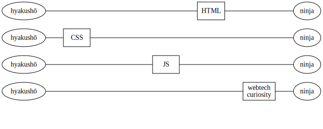
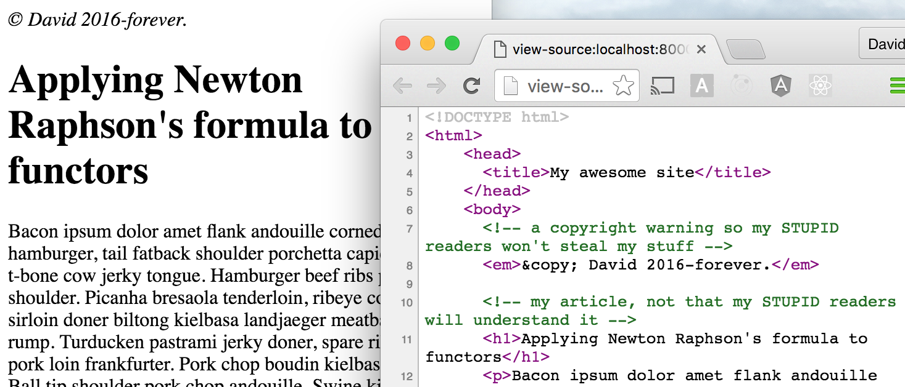
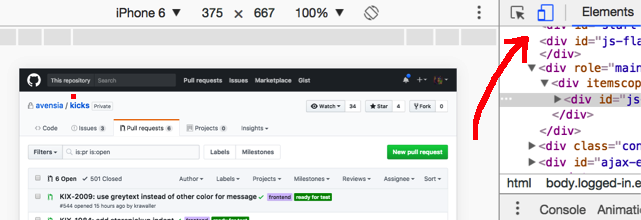

The Web Platform
HTML + CSS + JS = <3
Course overview
1. Introduction
- Your teacher
- The Web platform
- The masterplan
- Tools and resources
- Exercise - Introductions
2. HTML
- Nested data
- Exercise - Geneaology
- XML
- Exercise - Back to the past
- HTML basics
- HTML content
- Exercise - Hello world!
- Semantics
- Two special elements
- Exercise - Fighting Fantasy
3. CSS basics
- Overview
- CSS selectors
- Element descriptions
- Combinators
- Exercise - Battle
- Inclusion
- Box model
- Property values
- The browser devtools
- Exercise - Style the game
4. More CSS
- Pseudo Elements
- CSS Deluxe
- Exercise - Build step
- Transitions
- Animations
- Exercise - Going overboard
- Order
- Good behaviour
- Layout
- Flexbox
- Exercise - Faux columns
5. CSS Bootstrap
- CSS Bootstrap overview
- Usage
- The Grid system
- Bootstrap components
- Behaviour
- Exercise - trying it out
- Exercise - Trying LESS too
6. JavaScript basics
- Introducing JavaScript
- Inclusion
- JS at a glance
- Exercise - testing the waters
- Objects
- Arrays
- Functions
- Exercise - cooking time!
7. The DOM & jQuery
- Introducing the DOM
- Catching DOM events
- jQuery
- Exercise - jQuery
- Demo - a community effort
- Exercise - dynamic gamebook
8. More JavaScript
- Loose types again
- Functional programming
- Map and reduce
- Code reuse in JavaScript
9. JavaScript repetition
- Your teacher
- JavaScript.. Again.
- Exercise time!
- Node and NPM
- Exercise - Node and NPM
10. Compiling JavaScript
- Goal
- Setup
- Basic bundling
- 3rd party modules
- Uglifying
- Using ES6 JavaScript
- Static resources
- Linting
- Source maps
11. Beginning AngularJS
- Templating
- DSL
- Exercise - Handlebars
- The name AngularJS
- Getting started
- Exercise, basic Angular setup
- Controllers
- Exercise, controllers
- Loops
- More DSL words
- Exercise - AngularJS dabbling
12. More AngularJS
- Sandbox tip
- Dropdowns
- Filters
- Exercise - more dabbling
- Game evolution
- Syntax differences
- Communication
- Exercise - Quiz
Introduction
Setting the scene
Sections in this chapter:
- 1. Your teacher
- 2. The Web platform
- 3. The masterplan
- 4. Tools and resources
- 5. Exercise - Introductions
1-1. Your teacher
The preacher
Let's start with the most important - me!

Contact information:
- Email: david.waller@edument.se
- Blog: http://blog.krawaller.se
- Twitter: krawaller
- Phone: 0708-293094
Don't be a stranger!
But, fair warning - I spend my days singing this gospel:

Which means you'll have to put up with quotes like this:
Java is to JavaScript as pain is to painting
1-2. The Web platform
a.k.a. the holy trinity
The Web platform is really the combination of three separate technologies:

(There was also a dark time when Java applets were used in webpages, but we don't talk about that...)

(And we don't acknowledge the existence of flash either)

Traditionally, web apps looked like this:

Web tech was just the UI. The real coding was done in php / ruby / java / .NET.
But a modern SPA (Single Page Application) is more like this:

Additionally, web tech has escaped from the browser:

And blurring the lines even further - there are framework to compile web to native code:

In essence: web tech is on the (high) rise, and even if you intend to stay in a sheltered Java garden, knowledge about the web platform will serve you well.
1-3. The masterplan
tajmad och klar in i minsta detalj
Here follows some points on what is to follow!
- The gist: for 6 (or maybe 7) days I will teach you the fundamentals of web development.
- The course will be centered around these slides.
- I will update them during the course.
- You'll get a pdf when we're done...
- ...along with all the interactive demos.
- The focus will be on concepts and the big picture, not the nitty gritties.
- We will strive to adhere to accelerated learning's focus on exercises, but...
- ...conveying the big picture does require gorgeing of theory.
- After the foundation is laid, you'll be shoved towards AngularJS
- We will talk about the situation right now, and not dwell on what has been.


- It is forbidden to keep a question to yourself. Ask away! Because,
- there are no stupid questions. Only stupid people.
The goal boiled down - we want you to...
- understand the fundamentals of the father HTML, the son CSS and the holy spirit JavaScript.
- know where to go fo the specifics
1-4. Tools and resources
Gear up!
On this journey, our primary tool is a browser. I primarily use Chrome, but any modern browser will do.
This is not just for consuming web content - the developer tools inside the browser is an integral part of our setup. Consider it part of our IDE without the I!
Another very useful function in the browser is to be able to view source. All web apps transmit their entire source code to the browser, so snoop away!

We also need an editor. As HTML, CSS and JavaScript isn't (necessarily) compiled, any text editor can be used, but preferrably one with good web tooling.
There is an ongoing religious war between whether IDE:s or editors are the optimum. You don't have to take sides, but it is good to understand the problem to be able to form an opinion.
Finally you need a good resources for looking up specifics. I recommend Mozilla Developer Network, or MDN for short.

Find it at https://developer.mozilla.org/.
I do NOT recomment W3Schools, who will be at the top of every googling. They are good at SEO, not explanations and documentations.
I suggest either
- blocking them from google results, or
- prefixing your queries with MDN
Whichever resource you use, it is important to have somewhere within reach to go for details.
Therefore, choose a resource and invest time in getting to know it and know it well, so that future lookups go quick.
1-5. Exercise - Introductions
Going the rounds
Let's now move on to what's actually the most important - you guys!
In this exercise you're going to create a simple introduction of yourself for me.
Also, we're going to dip our toes into using Git and Github, which will be the primary way in which you submit exercises throughout the web days!
(because Carl has already made you all into Git ninjas, right?)
First - create a simple document where you position yourself on these 4 scales, 1-10:

And feel free to also add other personal information that I should be aware of!
(JavaScript ruined my childhood, etc)
(Although note that everything you submit is publicly accessible)
Now you'll add your file to my submission repository, by:
- aforking my repository
- bdownload your fork to your computer
- cadd the document to your repo
- dcommit the changes to the local git history
- epush the changes to your fork
- fcreate a pull request to my repo!
First, forking my repo!
- Make sure you're logged in to Github.
- Navigate to my repo at github.com/krawaller/academysummer2017/
- Hit the fork button to the top right.

Now to download your fork!
- Open a terminal
- Navigate to where you want to download the fork
- Execute the following command:
git clone https://github.com/<yourusername>/academysummer2017.git
Now we add your document to the fork!
- Inside the fork, create a new folder with your github username.
- Place your document inside that folder.
- In the terminal, when back the root folder, execute:
git add .
Adding the document is not enough, we must also commit the changes by running this command:
git commit -m "added personal document"
Now we push the changes to the fork on Github by running:
git push origin master
Go back to the browser and your fork - there should now be a button inviting you to open a pull request. Click it!

Note that you then have to confirm again in the resulting form to actually submit the pull request!
HTML
lingua franca of the web
Before we begin - are we seriously going to waste time talking about HTML? which we all already know how it works or could learn in 5 minutes?!
Yes. Having a good understanding of the fundamentals is important, and in my experience, even many web people lack that.
However we won't dwell on details, just make sure we have a solid grasp of what's going on.
Sections in this chapter:
- 1. Nested data
- 2. Exercise - Geneaology
- 3. XML
- 4. Exercise - Back to the past
- 5. HTML basics
- 6. HTML content
- 7. Exercise - Hello world!
- 8. Semantics
- 9. Two special elements
- 10. Exercise - Fighting Fantasy
2-1. Nested data
Matryoshka time!
Understanding HTML requires understanding the concept of nested data. So that is where we'll start!
We will approach this in a roundabout way by designing our own language.
How should we encode an object? We need some kind of divider, so that people can tell where the description starts and ends. Why not go with opening and closing brackets?
[ ]
Most systems involve their objects being classified by type, so let's introduce that. We'll simply put the type within the brackets:
[apple] [pear] [banana]
But objects can also have other characteristics apart from their type. These are often called attributes. They come in two flavours:
- attributes with a value (
lengthhas a number) - attributes with no value (
disabled,leaf-node)
How should we mark up the attributes in our language? Let's...
- list them inside curly braces after the type.
{ } - use
:to separate attribute and value (if there is a value) - use
,to separate between different attributes.
So if we have an object with these attribute:

Finally, objects can contain other objects. Otherwise it wouldn't be nested data!
For our toy language we decide to...
- list children inside parenthesis after the type and attributes
- separate children with
,to be consistent
So with this data:

...we would get this markup:
[basket{price:15}([apple{price:8}],[banana{price:9}])]
If we allowed filler whitespace it could be made more readable, but where's the sport in that?
To recap - an object can have...

...so any expression language for nested data must be able to handle these things.
Regarding object relations we have so far only discussed parent-child.
But conceivably there could also be other relations! However, this is outside of the scope of our definition of nested data.
2-2. Exercise - Geneaology
Adam and Eve, sitting in a tree
To truly wrap our brains around nested data you shall now design your own language!
That means revisiting all the decisions we just went through:
- how to encapsulate an object
- how to express object type
- how to express attributes, with and without values, and separation of all
- how to express children
Your language does not have to be useful, so you get bonus points for being far out!
It does however have to be unambiguous, so make your rules very clear!
When you have defined your rules, use them to encode your family tree!
- Start with your favourite grandparent
- Ignore spouses - we're only interested in children.
- Decide what you should use for type. Name? Gender? Nationality?
- Decide on a number of attributes to encode for each person. Name? Zodiac sign? Favourite folk metal band?
Yes, that means it's not a tree in the traditional sense, but something like this:

Do your work in a text file which you then need to add to your repo, push to your fork and create a new pull request, much like you did last time!
2-3. XML
not quite as cool as it used to be?
Before we talk about HTML, let's look at how XML (eXtensible Markup Language) has solved the exercise you just did!
There is a lot more to be said about XML, but we don't care about that - only the syntax.
Starting with the encapsulation - XML delimits objects by an opening and closing tag which contains the type.
<shelf></shelf>
The opening tag is <type>, the closing is </type> - the same but with a forward slash before the type.
Now, attributes! They...
- are put inside the opening tag.
- are separated with whitespace
- uses an equal sign before the value
- has the value within quotes
So if we have a heavy oaken shelf, we get:
<shelf wood="oak" weight="85kg"></shelf>
What about children? They are simply listed between the opening and closing tags!
<shelf wood="oak" weight="85kg">
<animal race="Hieraatus Spilogaster" taxidermist="Bob"></animal>
</shelf>
Whitespace is allowed wherever, which lets us space out the information in a readable way.
For an element with no children, XML has an alternative shorthand with self-closing tags. So instead of this:
<animal race="Hieraatus Spilogaster" taxidermist="Bob"></animal>
we could have done this:
<animal race="Hieraatus Spilogaster" taxidermist="Bob"/>
Finally something that our discussion on nested data didn't touch: XML allows leaf text nodes as children, by simply typing normal text instead of an element within the tags:
<famous-quote>Alea Jacta Est</famous-quote>
Although powerful this also gives rise to ambiguity. For example, should we encode a book like this...
<book title="Naiv Super" author="Erlend Loe"></book>
...or like this?
<book>
<title>Naiv Super</title>
<author>Erlend Loe</author>
</book>
Also, we lied before - whitespace within the tags does have meaning, as they become text nodes! So the definition above...
...will actually be interpreted as this:

(although the interpreter can be made to skip those whitespace nodes)
This does however allow us to do stuff like this, which can be quite useful:
<truth>I am <emphasis>really</emphasis> good at this!</truth>

As a final note, learn the vocabulary:
- an element is an object / entity / thing / whatever you want to call it.
- an element is defined using an opening and a closing tag (or a self-closing tag).
In essence: the element is the object, while the tags are the delimiters for the object.
2-4. Exercise - Back to the past
First blood 2
You all saw this one coming - your mission, should you choose to accept it, is to redo the geneaology in XML!
The translation might mean that you have to make choices, as noted earlier. Bonus points if you reason around these!
Before you submit your work you should validate your xml. A nice service for that can be found at https://validator.w3.org/#validate_by_input.
Note that you have to put this line:
<?xml version="1.0"?>
...at the top of your xml, otherwise the validator will balk because reasons.
You can ignore warnings - as long as you see the green banner, all is well:

Now add the file to you repo and send off a new PR, as usual!
2-5. HTML basics
finally getting to the point
Now, finally - HTML! HyperText Markup Language is a flavour of XML for encoding documents meant to be consumed on the web.
Much like Photoshop expects a .psd file, your favourite web browser wants .html.
An HTML document has the following structure:

Translated to actual HTML, that becomes the following:
<html>
<head>...</head>
<body>...</body>
</html>
By adding an optional leading <!DOCTYPE html> thingie, we tell the browser that this is a modern HTML5 document.
<!DOCTYPE html>
<html>
<head>...</head>
<body>...</body>
</html>
We won't go into (too) much detail, but suffice to say that you should always include it.
So, what metadata goes into the <head> tag?
A heck of a lot of stuff, but we'll now cover two common examples.
First off, we set the document title as a text node in a <title> tag:
<title>My AWESOME site</title>
The browser will then bubble that title up in different ways when your page is displayed.
We can also set the character set as a charset attribute on a <meta> tag:
<meta charset="utf8">
This (hopefully) prepares the browser to show Unicode characters. Without this, for example Swedish characters like å, ä and ö might be displayed wrongly.
Although that's not the entire truth - it also matters how the file is saved.
In short: encoding sucks.
Question: Did you notice something weird on the slide with the meta element code?
Answer: The <meta> element wasn't closed!
<meta charset="utf8">
What's up with that?!
While XML is very strict, HTML takes a looser approach; elements which never have children do not have to be closed. OCD:ers beware!
(to the point: http://xkcd.com/859/
There was a stricter flavour called XHTML which enforced well-formed XML, but that never took off.
2-6. HTML content
let's talk body parts
As we said before the <body> element contains the actual contents of the document, that the browser will show on screen.
So, what does that look like?
Basically, the browser will display the leaf text nodes.
So let's say we feed it this nonsense:
<!DOCTYPE html>
<html>
<head></head>
<body>
<foo>BAR BAZ! <bin gnu="wee">boo</bin></foo>
<laj boo="foo">gnork.</laj>
Amen.
</body>
</html>
...then the browser would display this:

This means we can deduce that...
- the element types and attributes are simply ignored,
- as are the linebreaks.
- Sequences of spaces are collapsed into a single space.
But of course, there are elements with special meaning to the browser. These fall into two categories:
- Block level elements that take up the full width of the document.
- Inline elements that flow with the text. This is the default, as we saw with our nonsense elements.
The perhaps most common elements are...
- the
<div>, short for divider, which is a generic block level element. - the
<span>, which is a generic inline element.
Quiz: Knowing what you just learned, what would this look like?
<!DOCTYPE html>
<html>
<head></head>
<body>
<div>Thorin Fili <span Kili="Balin">Dwalin</span></div>
<div Oin="Gloin">Dori <div>Nori</div> Ori</div>
Bifur
<span>Bombur</span>
</body>
</html>
Answer: Well, like this of course!

On the subject of generic elements - there are also some generic attributes that we can set on all elements. MDN has a full list here:
https://developer.mozilla.org/en-US/docs/Web/HTML/Global_attributes
We'll take a look at a few of them now:
The id attribute allows us to give a unique name to an element that for some reason is special:
<div id="app-wrapper">...</div>
The id allows us to easily target the element from CSS or JavaScript.
The class attribute is a bit special: in that string of text you can list a number of "classes" separated by spaces. Many elements can share the same class(es), allowing us to group elements together in themed categories.
<div class="wrapper article">...</div>
These groups can then be targeted in CSS or JavaScript.
And just to show an example that doesn't have to do with targeting - the lang attribute...
<div lang="en">...</div>
...allows the browser to provide spell checking and dictionary lookup for the correct language.
Finally - if for whatever reason you want to insert a comment into HTML, or temporarily exclude some elements from the flow, just wrap it within <!-- and -->:
<div>a paragraph of text</div>
<!-- <div>a paragraph which has been commented out</div>
<div>this paragraph too is outcommented</div>-->
<div>but this one is still visible!</div>
Beware that these comments still shows up in the source code, so no cursing!

2-7. Exercise - Hello world!
Let your presence be known
Time for a quick hello world intermission exercise!
While steeling ourselves for what is to come;
- open the simplest possible editor you can find (likely Notepad on Windows)
- create a simple html page where you say hello to the world
- save the file wherever, with the suffix
.html - in your browser select open file, navigate to your file and open it
- bask in the glory of your text showing up on screen!
...and, to save your work for posterity, add it to the repo and make a new PR happen!
2-8. Semantics
say what you mean
You just met <div> and <span> which are generic elements. But, most elements you use will be semantic.
And this is important - the primary purpose of HTML is to explain to the browser what the content is, so that the browser can make informed decisions on how to display it.
Here are some common elements useful for marking up text:
- A
<p>element represents a paragraph of text. It will be displayed as a block with a bottom margin. - The
<h1> - <h6>elements are headlines. 1 is the most important. They are blocks, with a bottom margin and a bigger and bolder look the lower the number.
Some more;
- A
<strong>element is used for an inline section of text that you want to highlight. Typically displayed in bold. - Similarly there is an
<em>element for emphasis, typically displayed in italics.
So feeding the browser this:
<!DOCTYPE html>
<html>
<head></head>
<body>
<h2>Monday 24/3</h2>
<p>Ashley was so <strong>annoying</strong> today, OMG!!</p>
<p>When I badmouth someone, I do it to their <em>FACE</em>!
</body>
</html>
...we get this:

There are rules on where in the structure an element can appear, which all depend on their semantic meaning.
For example, it makes no sense to nest a paragraph inside another paragraph, so that is forbidden.
In earlier HTML, many elements dealt with appearance. For example;
- there was a
<bold>element - and an
<i>element (short for italics).
Now they are deprecated in favour of semantic versions:

This is typical for HTML as a whole.
So, what other elements we can use?
Too many to mention, but check the full reference at MDN:
The fact that HTML content is semantic is also the reason why we haven't mentioned layout or style yet.
Those things should only live in CSS-land. HTML is content, CSS is style and layout, and never the two shall meet, lest sadness and pandemonium ensues.
2-9. Two special elements
Tweedle-dum, tweedle-dee
In this section we'll take a quick look at two important elements. First out is the <img> element, which lets us insert images into our documents:
<img src="resources/images/6074.png" title="sooo pretty">

We control the image mainly through two attributes:
srcwhich is an address to the image file. It can be either- relative, pointing to a resource on the same server, or
- absolute, pointing anywhere
title, which will be displayed as a tooltip in most browsers
Note that as an image will never have a child, just like the meta element, we don't need to close it.
When you need all details about a specific element such as the img element, MDN again has you covered:
https://developer.mozilla.org/en-US/docs/Web/HTML/Element/img
Quiz: Now for the second important element, which is arguably the most important of all. Can you think of which it is?
Answer: The anchor, or <a> element as we know it! Without that, there would be no internet.
The anchor has a href attribute which control what page it leads to.
<a href="http://bit.ly/hespeaksthetruth">the truth</a>
Just like image sources it can be relative or absolute.
Here is MDN:s full spec for the anchor element:
Quiz: The image tooltip is controlled by a title attribute, but for the link text we used the element children. Why didn't they go for something like this...
<a href="https://www.boardgamegeek.com/" title="best site ever">
...instead of the current syntax which requires a closing tag?
<a href="https://www.boardgamegeek.com/">best site ever</a>
Answer: We might want to make images or big chunks of text or html into a link, but inside an attribute we can only enter text!
But be careful looking for meaning in syntax details; most of it has just kind of happened.
A final short note; before the anchor, all elements we saw just meant
- semantic meaning and some
- default styling, most importantly whether they are
- block or inline.
But the anchor is the first example of an element that has behaviour.
There are others, but they work mostly in conjunction with JavaScript, so we leave them be for now.
2-10. Exercise - Fighting Fantasy
left or right, block or strike?

Apologies, but yes - now you get to make a website.
Not only that, you are going to make a classic gamebook adventure! Anyone recognizes this?
They work something like this:
A dark hallway extends into the unknown. You can just make out the outline of a door to your left.
- to try the door, go to page 43
- to fumble down the hallway, go to page 231
We are now going to emulate the same thing but using a website with links instead of a book with page-turning instructions.

Create a folder for your game inside the repo. It should contain an image folder and a .html file per page. The first page should be called index.html.
Just create a few pages, we're just testing the waters here. Don't go overboard!
To start off, create a basic html content structure for your pages. It should...
- have a header section with the name of the game
- a main section where the text and image of the current page is visible
- a navigation section, perhaps a list, with the current possible options
A good tip is to check out the MDN element reference, particularly the Content sectioning part.
And, as always, PR when you're done.
BUT! To spice things up, we're going to work in a new branch!
We'll create a new branch named gh-pages, by running this command:
git checkout -b gh-pages
Everything else will still work the same, except that when we push, you must type:
git push origin gh-pages
...so, why this particular branch name?
This branch name has a magical meaning for Github, namely that it'll be automatically published to a web server.
If our github repo has the following URL...
http://github.com/myusername/myreponame
...then the content in a gh-pages branch is published at
http://myusername.github.io/myreponame
In other words, we're using Github as a collaboration tool and a publishing platform!
CSS basics
layout and style
Now to learn how to affect the layout and look of HTML!
Sections in this chapter:
- 1. Overview
- 2. CSS selectors
- 3. Element descriptions
- 4. Combinators
- 5. Exercise - Battle
- 6. Inclusion
- 7. Box model
- 8. Property values
- 9. The browser devtools
- 10. Exercise - Style the game
3-1. Overview
CSS from a chopper
CSS, or Cascading Style Sheets, is a language to control style and layout of HTML content.
It wasn't really designed to do much more beyond formatting text, so regarding the layout part it can feel like a bad fit and has a bad rep.

When we say CSS, we are actually talking about two different languages. Take a look at this blob:
div > p:first-child, .first, h4 {
margin-left: 2 em;
text-style: italic;
}
If we "zoom out", it could be transcribed as this:
Selector, Selector, Selector {
Style rule;
Style rule;
}
Essentially, CSS consists of selectors and style rules. All elements matching the selectors will get the style rules.

So learning CSS means learning both of these!
3-2. CSS selectors
The targeting mechanism
Let's look at the first part of CSS - selectors!

Just like CSS splits into selectors and style rules, so does selectors split into descriptions and combinators.

These are again two completely different things, so we can even make the case that CSS consists of 3 different languages!
We touched on CSS' bad rep for not being very good at doing layout.
CSS selectors, however, are very good at what they do, namely select a subset of elements from a document.
In fact, CSS selectors are so efficient that JavaScript stole them, because they got the job done better than the programmatic interface that existed before!
Many modern JS frameworks also use CSS selectors, so all in all there are many good reasons to learn them well.
So let's go do that!
3-3. Element descriptions
The wanted poster
The most important part of a CSS selector is to describe elements that should be selected.

There are five different aspects that we can describe, each with its own syntax:

These can be combined however you see fit. Here is an (exaggerated) example using all of them:
button[disabled]#deletemsg.big:first-child
This would match all
- nodes of type buttons
- that has a disabled attribute
- and id is
deletemsg - and class attribute contains 'big'
- and it is the first child of its parent
As per usual the details can be found on MDN:
https://developer.mozilla.org/en-US/docs/Glossary/CSS_Selector
However, we will now make a few observations for each of the five aspects.
Some notes on the type description:
div
- There's no special syntax, just write out the type.
- They are optional, we can make a description with just other aspects.
- An asterisk
*is a wildcard (sometimes called "universal selector"), but rarely useful.
The id description...
#app-wrapper
- refers to the generic attribute we saw in the HTML chapter
- is prefixed with a
# - will (or should) only ever match 1 (or 0) elements.
The class description...
.container
- again refers to a generic attribute
- is prefixed with a
. - can have multiple classes:
.container.highlight
The attributes description...
[disabled] [foo="bar"] [href^="http"]
- is probably the most complex description aspect
- matches elements depending on attributes and their values
- is surrounded by brackets
- can test simply for attribute existence by just mentioning the attribute
- can test attribute value by using
=and the wanted value - can match value beginning by using
^=
Quiz: Ok, so ^= allows us to match against the beginning of an attribute value. But what would be the point of that last example we saw?
[href^="http"]
Answer: If all local links are relative, which is normally the case, then this would be an excellent way to catch all external links, to make them look or behave differently.
Finally some notes on the pseudo-classes:
:first-child :nth-child(2) :active
- They are prefixed with
: - They allow matching on position or state
- Some take arguments which are given within parenthesis
- The
:not()class takes a full CSS selector - They are obscure but really powerful, so worth getting to know!
3-4. Combinators
Many wanted posters!
Let's now look at the other half of selectors, namely how we combine descriptions!

There are four different ways that descriptions can be combined, which we'll look at one at a time:

The perhaps most common one is the descendant combinator. By having two descriptions with space between...
div p
...we match all elements that
- match the last description
- have an ancestor matching the first description. This can be any number of generations up the tree.
I think it is unfortunate that the descendant combinators doesn't have a non-space symbol, something like this:
div _ p
Whitespace elsewhere in CSS doesn't have meaning, but here it suddenly does. To help with this, think of descendant combinators as invisible symbols!
div > p
The child combinator is very similar to descendant selector, but here the first selector must match the parent and not just any ancestor.
Thus the child combinator is smaller in scope than the descendant combinator.
div ~ p
The sibling combinator is similar to the descendant combinator, but works horisontally instead: it matches elements that...
- match the last description
- have an older sibling that matches the first description
div + p
Finally the adjacent sibling combinator works in the exact same way, but requires the neighbouring older sibling to match the first description.
The two sibling combinators are not often used, but they are good at what they do.
Solving that problem with other means would require brittle workarounds, something you often see from web developers who don't know about them.
3-5. Exercise - Battle
2 (or 3) goes in, 1 comes out
This is a small intermission exercise to do some practicing on CSS selectors. You'll need...
- a reference at the ready - MDN works fine
- an opponent or two. Literaly - you must be 2 or 3 people.
Go to http://blog.krawaller.se/cssbattle/, and you're met with this simple form:

Enter the same room as your opponent(s), but using different names. You will then all end up in the same battle arena:

Each of you can set your selector, and everyone sees everyone's results.
There are no hardcoded rules, but we suggest you take turn to make a selection, and then the other(s) should make the same selection as fast as possible.
3-6. Inclusion
smuggling in the paint
There are 3 different ways in which we can apply CSS to our content:
- linking to a separate
.cssfile - putting it into a
styletag - inlining it in the
styleattribute of an element
(We can also mutate styles dynamically with JavaScript, but that comes later!)
A separate file means using a <link> element:
<!DOCTYPE html>
<html>
<head>
<link rel="stylesheet" href="styles/mystyles.css">
</head>
<body>
<!-- lots of HTML content here -->
</body>
</html>
The <style> element simply wraps the CSS code. It can go anywhere, but customarily in the head:
<!DOCTYPE html>
<html>
<head>
<style>
/* Lots of CSS code here */
</style>
</head>
<body>
<!-- lots of HTML content here -->
</body>
</html>
Inlining in the style attribute means we don't need selectors, since the style rules are applied to this particular element.
<p style="font-weight: bold;">It will never happen again.</p>
Quiz: Which method do you think is the most common, and why?
Answer: In almost all situations a separate file is preferred, since that gives us a good separation of concerns. Style tags arguably gives us that too, so the primary thing is to be careful with inlining styles.
3-7. Box model
The building block blueprint
You already met margin, border and padding. They make up the box model:

Intimately connected to this is the notion of block content and inline content. This is controlled though the display property.
Understanding the difference between these two is absolutely central!
Block vs inline
block vs inline display mode<div>Once upon a time there was a <strong>very</strong> scary gnome.</div>strong {
background-color: red;
height: 50px;
display: inline;
}By default strong elements are inline, and flows with the text. Height has no meaning.
strong {
background-color: red;
height: 50px;
display: block;
}But change to block and see what happens!
strong {
background-color: red;
height: 50px;
display: inline-block;
}Now inline-block! Woo!
Depending on which display mode an element has, it will behave differently in a number of ways, and other CSS properties get different meaning.
There used to also be some confusion as to what was actually part of the "box":
Box Sizing
<div class="ruler">I am 100px</div>
<div class="box"></div>.ruler {width: 100px; background-color: magenta;}
.box {
background-color: green;
width: 100px;
height: 100px;
padding: 10px;
border: 10px solid red;
box-sizing: content-box;
}The default is called content-box, and doesn't include padding and border.
.ruler {width: 100px; background-color: magenta;}
.box {
background-color: green;
width: 100px;
height: 100px;
padding: 10px;
border: 10px solid red;
box-sizing: border-box;
}If we do want to include padding and border, we use border-box.
As a final tentacle from the box model, it can in part be used to control visibility of an element.
Visibility
visibility: none<div>Once upon a time there was a <strong>very</strong> scary gnome.</div>strong {
visibility: visible;
}All elements have visible as default visibility.
strong {
visibility: hidden;
}Note how it still takes up the same space!
strong {
display: none;
}While if we set display to none, it takes up no space at all.
3-8. Property values
What currencies are ok?
So we saw a few basic styles flash by before. But what values can they have?
Well, of course, that depends.
Many properties have unique values that only they can have.
You've already seen the color constants. Let's look at some others specific to the background image!
Background image
<div class="box"></div>.box {
height: 150px;
width: 300px;
background-color: gold;
background-image: url(resources/images/css3.png);
}The background is repeated by default.
.box {
height: 150px;
width: 300px;
background-color: gold;
background-image: url(resources/images/css3.png);
background-repeat-x: no-repeat;
}We can tell it not to repeat the image.
.box {
height: 150px;
width: 300px;
background-color: gold;
background-image: url(resources/images/css3.png);
background-repeat-x: no-repeat;
background-position: center;
}The background can be positioned.
.box {
height: 150px;
width: 300px;
background-color: gold;
background-image: url(resources/images/css3.png);
background-repeat-x: no-repeat;
background-position: center;
background-size: 100% 100%;
}And sized according to the box.
A lot of properties take a length, and these can have different units.
These can be divided into absolute and relative units.
Length units
<div class="box">Testing!</div>.box {
width: 70px;
background-color: magenta;
}Pixels, px, is perhaps the most common unit.
.box {
width: 70pt;
background-color: magenta;
}A point, pt, is 1/72 inch.
.box {
width: 70mm;
background-color: magenta;
}We can also use regular units such as millimeter, mm.
.box {
width: 70%;
background-color: magenta;
}Percentage in this case means percent of the parent width.
The percent unit
% unit<div class="shell">Container
<div class="box">Box!</div>
</div>.shell {
width: 200px;
background-color: magenta;
}
.box {
width: 50%;
background-color: red;
}The percentage relates to the parent width.
.shell {
width: 300px;
background-color: magenta;
}
.box {
width: 50%;
background-color: red;
}Change the parent and the box changes too!
The EM unit
em unit<div class="shell">Testing ems
<div class="box"></div>
</div>.shell { font-size: 14px; }
.box {
width: 12em;
height: 3em;
background-color: red;
}The em is relative to the parent font.
.shell { font-size: 20px; }
.box {
width: 12em;
height: 3em;
background-color: red;
}We increase parent font, and the box grows!
However, there are also some special values that all properties can take.
initialinheritunset
Defaults with inherited prop
initial, inherit and unset<div class="parent">
So:
<span style="color: initial; padding: initial;">Initial </span>
<span style="color: inherit; padding: inherit;">Inherit </span>
<span style="color: unset; padding: unset;">Unset </span>
<span>Unruled</span>
</div>.parent { color: red; padding-left: 10px; }
span { }foo
.parent { color: red; padding-left: 10px;}
span { color: blue; padding-left: 20px;}Bar
.parent {}
span { color: blue; padding-left: 20px;}BAZ
Learning all the details is impossible. You must have a reference such as MDN!
3-9. The browser devtools
Your new BFF
Contrary to the web developer of yesteryear, today we have very powerful developer tools built into almost all browsers. We'll be looking at Chrome, but there are analogs in the others.
They show you the element tree and provide info on specific elements.

This is especially useful for
- CSS debugging, as you can see exactly what styles are applied and from where and with which selectors they came.
- CSS experimenting, as you can toggle the styles, try out new values and even add completely new styles.
3-10. Exercise - Style the game
Hiring an illustrator
Time to return to your choose-your-own-adventure and make it slightly less drab!

In other words: add some CSS to the site you made earlier!
Since we want the same styling on all pages, and aren't using any templating system, you should put the styles in a style sheet which you then link into all pages.
How pretty must it be? Not very, but here are some suggestions:
- Find a style for each different section (header, main, footer, text, links, etc), and try to make them look clearly defined.
- Also make a good container for the entire app. These commonly have side margins.
- Experiment with typography. Try out different fonts, letter spacing and line spacing.
We encourage you to use this as an excuse to get to know the dev tools. You should do the experimenting in there, and only add the CSS code when you have a good idea of what you want.
Challenge:, use the :first-child and :first-letter pseudoclasses to make some nice drop caps.

There are some good pointers at CSS-Tricks: https://css-tricks.com/snippets/css/drop-caps/
Challenge: Use the @font-face feature to bring in some more game-like font!

You can also cheat by using https://fonts.google.com.
Challenge: If you grow bored with styling your game - do a pull request to the CSS battle app to make it look less crap!
The git repo is at https://github.com/krawaller/cssbattle, and my sad CSS is in styles.css in the root.
More CSS
sharpening the tools
Sections in this chapter:
- 1. Pseudo Elements
- 2. CSS Deluxe
- 3. Exercise - Build step
- 4. Transitions
- 5. Animations
- 6. Exercise - Going overboard
- 7. Order
- 8. Good behaviour
- 9. Layout
- 10. Flexbox
- 11. Exercise - Faux columns
4-1. Pseudo Elements
Where did you come from?!
You've already met pseudo classes. However, the pseudo elements do something we haven't yet seen - they add new elements to the document!
Say we have this p element:
<p>Eeexiiit <em>light!</em> Eeenteeer <em>niiiight!</em></p>
And we target it with this CSS:
p:before {
content: "♬ ";
}
p:after {
content: " ♫♩"
}
Then we get this output:

Note however that the notes don't actually come before and after the p element, but rather become the youngest and oldest children:
In other words, :before and :after are misleading names, they should have been called something else. Also there should be an actual before and after, but there isn't.
But still, the pseudo elements are a powerful tool when the moment is right.
Note that you don't have to use it for text content - we can also set display to block, add background images and all sort of shenanigans!
4-2. CSS Deluxe
bells and whistles
Although CSS has grown more powerful, there is still a lot to be desired.
- variables
- computations
- mixins
- nested declarations
This has driven many to try to add a layer on top of CSS. The two most popular solutions are SASS and LESS.


Read more at http://sass-lang.com/ and http://lesscss.org/.
The idea is that we write in a language that compiles down to regular CSS.

The LESS homepage shows this LESS code:
@base: #f938ab;
.box-shadow(@style, @c) when (iscolor(@c)) {
-webkit-box-shadow: @style @c;
box-shadow: @style @c;
}
.box-shadow(@style, @alpha: 50%) when (isnumber(@alpha)) {
.box-shadow(@style, rgba(0, 0, 0, @alpha));
}
.box {
color: saturate(@base, 5%);
border-color: lighten(@base, 30%);
div { .box-shadow(0 0 5px, 30%) }
}
...which compiles to this CSS:
.box {
color: #fe33ac;
border-color: #fdcdea;
}
.box div {
-webkit-box-shadow: 0 0 5px rgba(0, 0, 0, 0.3);
box-shadow: 0 0 5px rgba(0, 0, 0, 0.3);
}
Of course, using something like this means that we require a build step!
But as you will find, this is something that is regularly used in the web world, even though HTML, CSS and JS are all interpreted.
Why? Many reasons, three of which are:
- use preprocess languages for CSS or JS
- write in the latest tech, dumb it down for the browser
- minification (strip whitespace and comments)
4-3. Exercise - Build step
LESS is more
No surprise - we'll now integrate LESS into our game!
As we saw, this means that we now need a build step which compiles the LESS code into CSS.And the first step to install LESS is, perhaps surprisingly, to install Node!

More on Node, and installation instructions, here: https://nodejs.org/
We'll talk more about Node, which is a JavaScript runtime, later. Now we just need it to use npm, which is a package manager that runs in Node. LESS is distributed as such a package.

You can read more about npm here: https://www.npmjs.com/
LESS is installed as a global command. Once you have installed Node, open a terminal - it doesn't matter in which folder you are - and type:
npm install -g less
After that you now have access to the lessc command. You use it like this:
lessc path/to/styles.less wanted/output/path/styles.css
To integrate this in your project:
- Rename your
.cssfile to.less. CSS is valid LESS! - Read up on LESS and use some features in your file.
- Use
lesscto compile your code into.css!
Submit by adding, committing, pushing and make a PR as usual!
Challenge: Of course, having to remember to compile the .less file is tiresome. It is therefore common to set up an automagic compiler. Try your hand at this! There are many solutions, one suggestion is to use this: https://github.com/jonycheung/deadsimple-less-watch-compiler.
Challenge: If you still have time and/or energy left over, try to find some use for pseudo elements in your app!
4-4. Transitions
Slowing things down
Normally, if a style property of an element changes value, the change is instantaneous.
For example, we apply this style...
#instantexample:hover {
transform: rotate(45deg);
}
...to this div, so try hovering over it!
This div is exactly the same as before, but with one additional rule:
#transitionexample {
transition: transform 1s ease;
}
Try hovering again!
As you probably figure, transitions are a really powerful way to do CSS-only animations, and well worth getting to know well.
Some notes;
- The full shorthand syntax is
transition: <property> <duration> <timing function> <delay> - We can transition more than one property by separating them with
,:transition: width 2s, height 2s - As with many new / experimental technologies some browsers might require vendor prefixes still:
-webkit-transition,-ms-transition, etc. Although the need is growing less and less frequent.
As per usual there are lots more detail on MDN:
Btw, the transform property that we used as a transition example is really powerful, and worthy of looking up for its own sake!
4-5. Animations
ACTUAL animations, that is!
With transitions we can do simple animations from one state to another.
But CSS also provides actual animations where we change between predefined frames!
Behold this beautiful example!
An animation consists of two parts. First we name the animation and define the keyframes, which contain property values to be reached at various points during the animation timeline. These values will transition from one point to the next.
The earlier animation was defined like this:
@keyframes looparound {
0% {
top: 0;
left: 0;
}
25% {
top: 0;
left: 470px;
}
50% {
top: 170px;
left: 470px;
}
75% {
top: 170px;
left: 0;
}
100% {
top: 0;
left: 0;
}
}
And our element then used the animation by specifying name, duration and repeats:
#animationexample > div {
animation-name: looparound;
animation-duration: 3s;
animation-iteration-count: infinite;
}
If we only want to go from one set of property values to another, then we might as well just use transitions.
But there are more than two frames involved we must use animations instead!
4-6. Exercise - Going overboard
Because more is always better
Our newfound knowledge leaves us no choice - we absolutely must add transitions and animations to our game!
Look your game over, and any place where you can cram movement, do it!
When you're done, add new files, commit, push and do a PR as per usual!
Challenge: For extra annoyment points, read up on transform and do some transition or transformation with that! I have it from good authority that users LOVE when you use skew! Promise!
4-7. Order
let the race begin!
Question: So, styles can be defined in many different places. But, what happens when the same style is applied in different ways?
Answer: The browser follows a strict pecking order:
There were some things in there that we don't yet know about. First, !important - this is a keyword you can add to the end of a rule to bring it to the top of the pecking order.
.special {
background: yellow !important;
}
But as noted this is considered bad practice, just as inline styles are considered harmful.
So if we avoid those two...

...the primary order decider is specificity. But, what is that?
Specificity is the "weight" of the rule, which is calculated according to a formula. The gist;
#idselectors are the heaviest- then
.class,[attributes]and:pseudo - and finally type.
Say you have this style...
p:first-line {
margin-left: 2em;
}
...but you are also using an external CSS sheet which overrides your style.
Then you need to make your style more specific, often by prefixing it with ancestor specifications that you otherwise don't need:
body div#app-wrapper p:first-line {
margin-left: 2em;
}
A final note; since browser defaults can vary, it is common to use a reset sheet to be (more) sure that everything looks the same in different browsers.
An old but popular sheet is the one by CSS guru Eric Meyer which you can find here: http://meyerweb.com/eric/tools/css/reset/
And with a CSS reset sheet, we have simplified our world a little bit further!
4-8. Good behaviour
Our code of conduct
We've touched upon most of these points already, but let's gather up the stone tablets of CSS behaviour rules!
Thou shalt not use visual elements
<br>for a linebreak<hr>for a horisontal ruler
These are FORBIDDEN!
Thou shalt not use visual attributes
<div bgcolor="red"><div height="300">
These are VERBOTEN!
Thou shalt keep the
htmlas clean as possible
Instead of doing this...
<p class="firstParagraph">Little red riding hood...</p>
<p>Then came the big bad wolf...</p>
...and this...
.firstParagraph {
background-color: #CCC;
}
...you should skip the class and just do this:
p:first-child {
background-color: #CCC;
}
Try to solve the selection without cluttering the html, as much as possible.
Thou shalt keep your selectors simple
Don't make your selectors more specific than they need to be!
Question: Ehm, doesn't that commandment collide with the previous one? Isn't it easier to avoid cluttering the html if we have more complex selectors? And easier to write short selectors if we add some classes or extra divs to the html?
Answer: Yes. :D
Thou shalt keep your CSS organized
Keeping order in your Java project is easy - give classes good names, sort them in modules, etc. But doing it in CSS is hard!
Still, you must try! Use comments, file separation and structure. A good tip is to do whatever Nicole Sullivan says: http://www.stubbornella.org/
And now for the most important commandment of all.
Are you ready?
Thou must be patient!
You now know the basic rules, but probably feel a whole lot of frustration.
This is because I have taught you the grammar, but you still have to learn the vocabulary. To this, alas, there are no shortcuts.
4-9. Layout
setting the table
Now we'll take our nose off the floor and start looking at the bigger picture. How do we lay things out in CSS?
To start our journey, let's look at a few different solutions to something that's really hard to do in CSS - centering stuff vertically!
Vertical centering
<div class="shell">
<div class="piece">Center me!</div>
</div>.shell {
height: 100px;
background-color: #8799db;
display: table;
width: 100%;
}
.piece {
background-color: #efef8f;
display: table-cell;
vertical-align: middle;
}Curiously, vertical-align is only respected inside table-cell elements.
.shell {
height: 100px;
background-color: #8799db;
display: flex;
flex-direction: column;
justify-content: center;
}
.piece {
background-color: #efef8f;
}can also use flex!
.shell {
height: 100px;
background-color: #8799db;
position: relative;
}
.piece {
background-color: #efef8f;
position: absolute;
top: 50%;
transform: translateY(-50%);
}dwfer
.shell {
height: 100px;
background-color: #8799db;
line-height: 100px;
}
.piece {
background-color: #efef8f;
display: inline-block;
vertical-align: middle;
}exploiting that vertical-align positions inline items versus the line-height.
.shell {
height: 100px;
background-color: #8799db;
position: relative;
}
.piece {
background-color: #efef8f;
display: inline-block;
height: 40px;
position: absolute;
bottom: 0;
top: 0;
margin: auto 0;
}Will only work with set height on child.
.shell {
height: 100px;
background-color: #8799db;
}
.shell:before {
content: ' ';
display: block;
height: 50%;
margin-bottom: -20px;
}
.piece {
background-color: #efef8f;
display: inline-block;
height: 40px;
}also needs set child height
Centering stuff horisontally is easier, but still worth exploring:
Horisontal centering
<div class="shell">
<div class="piece">Center me!</div>
</div>.shell {
height: 100px;
background-color: #8799db;
text-align: center;
}
.piece {
background-color: #efef8f;
display: inline-block;
width: 150px;
text-align: left;
}Easiest is to make block text-centered blah
.shell {
height: 100px;
background-color: #8799db;
}
.piece {
background-color: #efef8f;
width: 150px;
margin: 0 auto;
}Can also do auto margins. Won't work without fixed width!
.shell {
height: 100px;
background-color: #8799db;
display: flex;
justify-content: center;
}
.piece {
background-color: #efef8f;
width: 150px;
}Flex!
.shell {
height: 100px;
background-color: #8799db;
position: relative;
}
.piece {
background-color: #efef8f;
width: 150px;
position: absolute;
left: 50%;
transform: translateX(-50%);
}Same absotrans as vert
We also need to discuss the concept of floats:
Float
<div class="reactlogo"></div>
<div class="story">The fox jumped over the little stream. This was quite the adventure, let me tell you! Omg omg omg foo</div>.reactlogo {
display: inline-block;
}
.story {}The logo is an inline block.
.reactlogo {
display: inline-block;
float: left;
}
.story {}Now note how all lines wrap around it!
.reactlogo {
display: inline-block;
float: left;
}
.story { clear: left; }We can expressively clear our way below floats.
4-10. Flexbox
solving the age-old riddle
There are two common problems that are embarrasingly hard to solve using regular CSS:
- centering things vertically
- having columns of equal height
CSS3 finally brought us a remedy: Flexbox!
The basic idea is simple; in this new display mode you select...
- opt in to the new display mode (
display: flex) - choose vertical or horisontal direction (
flex-direction) - how the content should be aligned along the direction axis (
justify-content) - and also perpendicular to the direction axis (
align-items)
There are some more flex properties, and also some for the children in a box, which gives you even more control.
This is hard to visualise from textual explanations, so try out an interactive tutorial here: http://blog.krawaller.se/flexboxdemo/
There are also two popular games that demonstrate the concept:
- Flexbox Froggy @ http://flexboxfroggy.com/
- Flexbox Defence @ http://www.flexboxdefense.com/
Remember how CSS selectors were so good at what they did that they leaked over into JS? It is the same with flexbox - it turned out to be such an efficient way to lay out things that it is used in many frameworks, most noteably by React Native.
4-11. Exercise - Faux columns
The holy grail
We mentioned columns of equal height before:

More specifically, we mean
- Two columns who both extend to the bottom of their parent
- The longest column desides the height of the parent
As previously stated, this is very difficult with regular CSS.
But, rather easy with Flexbox, which is what I used to create the screenshot!
And now, of course it is your turn to recreate the screenshot using HTML and CSS!
Some pointers;
- I got the text from http://baconipsum.com/
- The structure should just be a div with two divs inside
- You will need to play with
flexon the children - Experiment yourself first, but if you get stuck then go googling!
Challenge: If you're really serious about your webdev chops, find a way to steal my exact colours!
CSS Bootstrap
TV chef style
Sections in this chapter:
- 1. CSS Bootstrap overview
- 2. Usage
- 3. The Grid system
- 4. Bootstrap components
- 5. Behaviour
- 6. Exercise - trying it out
- 7. Exercise - Trying LESS too
5-1. CSS Bootstrap overview
what's in the package?
Bootstrap, or Twitter Bootstrap, is a "CSS framework", with some optional JavaScript tucked onto the side.
The homepage is at http://getbootstrap.com.
Here's an attempt at making sense of the package:
- aGrid system
- bComponents
- cHelper classes
- dAutomated jQuery plugins
The grid system is perhaps the most important part. It allows you to lay out your page in a 12-column system.
The components are our main building blocks. Boostrap defines classes you add to these to make them look/behave as expected.
<button class="btn btn-primary" type="button">
Messages <span class="badge">4</span>
</button>
Bootstrap also contains a whole bunch of helper classes: ready-made solutions to common needs.
<div class="pull-right">I will float right</div>
Finally it also includes some JavaScript-powered behavioral components.
Throughout all these various things, the core idea is the same;
Bootstrap defines a bunch of CSS classes, which you need to learn about!
All in all, Bootstrap is a super-useful tool that many web developers refuse to work without. It has become kind of like the jQuery of the CSS world!
However, careful about being too obvious!
5-2. Usage
Plugging it in
Exactly how we install bootstrap depends on what parts we want to use.
But let's talk through the possible inclusions!
- The core CSS file,
bootstrap.css, is mandatory - There's a JS file for the behavioral components
- There's an optional theme CSS file
- And a folder of fonts for the glyphicons.
Beyond that there's not much to say - simply include the files you need!
You can do it via CDN, but mostly having a local file is preferrable.
5-3. The Grid system
Making sense of the layout
The grid layout lets us lay out our website in 12 columns, which is a very common workflow in the printing and design world.
Let's see it in action!
<div class="container">
<div class="row">
<div class="col-md-6">hello</div>
<div class="col-md-6">world</div>
</div>
<div class="row">
<div class="col-md-3">this</div>
<div class="col-md-9">is pretty cool!</div>
</div>
</div>
Picking it apart, we see that...
- Everything must be inside a
container(orcontainer-fluid) - All columns must be inside a
row - Each "cell" must say how many columns wide it should be
- The total width should be 12 in each row
The grid is implemented using floats. So under the hood there are styles like this:
.col-md-* { float: left; }
.col-md-6 { width: 50%; }
.col-md-3 { width: 25%; }
What does md mean? Well, turns out we can decided a cutoff point for when the cells should all go on separate rows for smaller devices!
- Large (
lg), 1200px - Medium (
md), 992px - Small (
sm), 768px - Extra small (
xs) 480px
These are implemented through something called media queries:
@media (min-width: 992px)
.col-md-6 {
width: 50%;
}
5-4. Bootstrap components
The building blocks
Bootstrap provides a bunch of different solutions for common UI problems, isolated as components.
Most common UI components are predefined in Bootstrap. Here is a buttongroup:
<div class="btn-group" role="group" aria-label="...">
<button type="button" class="btn btn-default">Left</button>
<button type="button" class="btn btn-default">Middle</button>
<button type="button" class="btn btn-default">Right</button>
</div>
Note again how Bootstrap works purely with classes. For each component you simply need to learn what classes to add, and what attributes power them!
5-5. Behaviour
adding somewhizzbang
If you included the bootstrap JavaScript file, you can use the behavioral components.
They are very similar to the CSS components, except they have some interaction.
Under the hood they are using jQuery, and each component is defined as a jQuery plugin.
We include the components like before, using specific classes and attributes in our markup.
There are then two different ways of controlling the behaviour:
- Using JavaScript, calling the jQuery plugins manually
- Using declarative attributes in the HTML
The latter is most common, since you don't have to program anything yourself!
Here's an example of how attributes can control behaviours too:
<div class="alert alert-warning alert-dismissible fade in" role="alert">
<button type="button" class="close" data-dismiss="alert" aria-label="Close">
<span aria-hidden="true">×</span>
</button>
Awright, you can dismiss me!
</div>
5-6. Exercise - trying it out
We can all use some bootstrapping!
Enough chatter - let's throw CSS bootstrap into the game, and watch our players' minds get collectively blown!
There's three simple steps to this:
- aDownload the file
- bLink it in the HTML files
- cStart using the provided classes
First we need to include the basic CSS file. We won't bother with themes or JavaScript behaviour.
Download this file and place it in your project: https://maxcdn.bootstrapcdn.com/bootstrap/3.3.7/css/bootstrap.min.css
Now we must link the bootstrap stylesheet in all our HTML files by adding a link element, just like you previously did with your own CSS file.
Finally for the fun part - start adding Bootstrap classes to your markup! Presumably you'll want to change the markup some as well.
Explore the documentation at http://getbootstrap.com/ to see what is available and how it works!
If you aren't sure what to use and want a dedicated challenge - try to make the game work well on mobile!
Use the Bootstrap grid, or just manual media queries if you feel cocky.
To debug mobile versions, use the viewport tester in devtools!

Afterwards, as per usual, make a PR with the improved game! :)
5-7. Exercise - Trying LESS too
Less is more
Let's pay our debts from last time - we never did try out LESS!
Here's what we need to do:
- aInstall NodeJS
- bInstall LESS
- cCreate a LESS file
- dCompile the LESS into CSS
First we install NodeJS (and through that also NPM)! We won't talk much about what they are, that'll come later. For now we'll just throw it in and use it.
Go to https://nodejs.org/, click the version marked Recommended for most users, and run the downloaded installer!
The only choice that matters during the installation is to add NodeJS to "path" or whatever you Windows peeps call it.
Afterwards you'll get some new icons but we probaby won't use those - instead, open a regular terminal (Command Prompt or Windows Power Shell, it doesn't really matter), and type the command node - if you now get an empty prompt (click ctrl+C to quit it), it worked!
Now with NodeJS installed, let's install LESS! In a terminal, type the following:
npm install -g less
That's it, you now have LESS! :)
Time to start using LESS!
First, take your regular CSS file and save it with a .less extension right next to the old one!
Now, make use of the LESS syntax! Peek at the section in the last chapter, or at http://lesscss.org/.
Finally, time to compile our LESS into CSS!
In a terminal, navigate into the folder where the .less file is and execute:
lessc style.less style.css
This will overwrite your old file with a compiled version!
Reload the game to make sure it works as intended!
When you're done, submit a new PR as usual!
JavaScript basics
the holy spirit
Sections in this chapter:
- 1. Introducing JavaScript
- 2. Inclusion
- 3. JS at a glance
- 4. Exercise - testing the waters
- 5. Objects
- 6. Arrays
- 7. Functions
- 8. Exercise - cooking time!
6-1. Introducing JavaScript
better the devil you know
So, JavaScript! It is:
- aFunctional
- bObject Oriented
- cDynamically typed
- dLoosely typed
- eSyntactically C-like
What?
Functional, meaning that it emphasizes the application of functions
This in contrast to imperative programming, which emphasizes changes in state.
Object Oriented, meaning that it uses objects (data structures consisting of data and behavior) and that most things are objects.
Dynamically typed, meaning that it performs the majority of its type checking at run-time as opposed to at compile-time
Loosely typed, meaning that any value can be stored in any variable or bound to any parameter, and JavaScript will do any necessary conversions.
Syntactically C-like, for instance it has..
{...}for blocks;as a statement separator=for assignment/* ... */and//for comments
Of these 5 characteristics, the one that causes the most initial confusion is likely loose typing.
So your illustrious teacher will now demonstrate what that entails!
6-2. Inclusion
plugging it in
There are three ways to include JS in a web app
- ascript element containing code
- bscript element referencing a file
- cinline event handler in an element attribute
A script element with code might look like this:
<script type="text/javascript">
/* ...javascript code here... */
</script>
While a script element referencing a separate file might look like this:
<script type="text/javascript" src="/js/mycode.js"></script>
Note that you should not self-close the script element, as that might cause weird behaviour!
An inline event handler looks like this:
<button onclick="alert('You clicked, OMG!');">Don't click me</button>
As you might have guessed, inline handlers are a bad idea.
Question: Wasn't all of this extremely similar to how CSS inclusion works?
Answer: Yes! :)
Btw - remember that we now just talked about including JS in a web app, that is, a HTML + CSS + JS app that runs in the browser.
But JS can run in other places too - in Node, servers, IoT - anywhere!
You have already installed Node, although we haven't used it for JS execution yet.
Doing so is easy! If we have a JS file at path/to/myfile.js, relative our current terminal position, we simply type:
node path/to/myfile
And if you just want to experiment, another easy way is to use the console in the browser dev tools!
6-3. JS at a glance
a whirlwind tour!
Hold on tight, for now we'll run through some JS basics!
To try the snippets, paste them into the Console tab of the Chrome developer tools.
There is no main function - JS code is simply run from top to bottom.
We declare variables using the var keyword, and assign using =. No type specification needed, since JS is loosely typed.
var x = "Hello world!";
We end statements with ;. These are actually optional, but leaving them out can cause problems!
Since a variable can contain any type, the language offers a way to check:
console.log(typeof x); // "string"
The output from console.log is visible in the Developer tools console tab.
You saw string literals earlier. There are also...
- numbers:
3,2.04(all numbers are floating points) - booleans:
true,false
And two single-value voidish types:
- null:
null - undefined:
undefined
Equality testing is done in two ways:
==(which does type coercion, so3 == "3"istrue)===(also comparing type, so3 === "3"isfalse)
There are also != and !== negative variants.
You will recognize if statement syntax:
if (guess === correctAnswer){
console.log("Correct!");
} else {
console.log("Not quite...");
}
The else part is of course optional.
Also the for loop is rather classical:
for(var i=0; i<1000; i=i+1){
console.log(i+" bottles of beer on the wall");
}
As is the while:
while(x > 0){
x = x-1;
console.log(x+" bottles left");
}
This was a very superficial tour to give you what you need to test the waters. There is sooo much more to say!
6-4. Exercise - testing the waters
Getting our feet wet
Best way to learn to swim - jump into the deep end! You will now try your hand at JavaScript by creating a guess the number game.
Create a super-simple html file that only contains the necessary structure, as well as a script element where you will put your code.
We won't use the html as an interface. Instead we'll communicate using two otherwise useless methods:
- a
prompt - b
alert
First we have prompt. By executing this code:
var answer = prompt("What is your name?");
Then execution of the program is paused until the user has replied using the popup that the browser opened:

The other otherwise useless method is alert, which is the same thing but without the input field.
alert("WRONG!");

We can generate a random value using the random and floor methods of the built-in Math object:
// gives random number 1-10
var randomNumber = Math.floor(Math.random()*10)+1;
Note that all values from prompt are strings, so you might need to cast it to a number:
var guess = parseInt(prompt("Enter your guess"));
Now - use all these pieces to create a guess-the-number game! You should...
- generate a number between 1-10
- allow the user up to 3 guesses.
This exercise should be submitted to a guessthenumber folder inside your personal folder in the repo.
If you want to, you can make this exercise in groups of up to 3 - you don't have to make an individual solution! Only 1 person in the group needs to submit.
Challenge: Make it so that the user can play again if he wants to after the game is over!
Challenge: Check the input from the user and give error message if the input is faulty!
6-5. Objects
bags of data
The types we've seen so far have been atomic primitives. But JavaScript also has two composite data types, namely objects and arrays!
Althought technically arrays are a special kind of objects, but, never mind.
An object in JavaScript is a collection of key-value pairs, often called a dictionary in other languages.
The property names (keys) are always strings, and the property values can be anything.
We can create an object literal like this:
var myObject = {
someProp: 42,
anotherProp: "hello!"
};
There are two different ways to access a value.
We can use dot notation:
var x = myObject.someProp; // 42
Or we can use bracket notation:
var y = myObject["someProp"]; // 42
Question: The dot notation seems much smoother, so why would we ever want bracket notation?
Answer: That allows us to do dynamic lookups:
var propName = "someProp";
var z = myObject[propName]; // 42
We add a property simply by assigning to it:
var myObject.newProp = 777;
And we delete a property using the delete keyword:
delete myObject.newProp;
If we access a non-existing property we always get undefined.
myObject.bogusProp; // undefined
Contrary to primitives, objects are references, which means that this is false since it is two different objects:
var test = ( {a:1} === {a:1} ); // false
While this is true, since they point to the same object:
var x = {a:1};
var y = x;
var test = x === y; // true
Since objects are references they are always truthy:
if ({}){
console.log("An empty object is truthy!"); // will be shown!
}
We can iterate over objects using a for-in loop:
for (var key in myObject){
console.log(key+" has value "+myObject[key]);
}
Finally: object can contain other objects:
var me = {
name: "David",
address: {
street: "Åsgatan 9",
zip: 27131,
city: "Ystad"
}
}
We can access properties to any depth:
var myZip = me.address.zip;
...although we might have to guard for undefineds:
var myZip = me.address && me.address.zip;
6-6. Arrays
Ordered lists
A special kind of objects are arrays, which are an ordered list of values.
You could say that they are objects where the keys are always named 0, 1, 2....
We can create arrays using the array literal notation:
var list = ["tomatoes",42,false];
Since arrays are objects we access elements as before:
var firstItem = list[0]; // "tomatoes"
An array has a length property that tells us how many elements it contains:
list.length // 3
Which means I can pick the last item by doing this:
var lastItem = list[list.length-1]; // false
We can add a new value by calling the push method:
list.push("foobar");
list.length // 4
It is common to iterate using a regular for loop:
for(var i=0; i < list.length; i = i+1){
console.log("Item "+i+" is "+list[i]);
}
There are a whole bunch of array methods - see the MDN reference for a full list:
https://developer.mozilla.org/en-US/docs/Web/JavaScript/Reference/Global_Objects/Array
Question: The length property was rather convenient - is there something similar on regular objects?
Answer: Not directly, but we can get an array of all keys for an object using the keys method of the global Object object:
var keys = Object.keys(myObject); // ["someProp","anotherProp"]
6-7. Functions
code in a can
There are two different ways to define a function in JavaScript. First as a named function:
function echoer(word,times){
var echo = "";
for(var i = 0; i < times; i = i + 1){
echo = echo + word;
}
return echo;
}
Or as an anonymous function which we can assign to a variable:
var echoer = function(word,times){
var echo = "";
for(var i = 0; i < times; i = i + 1){
echo = echo + word + " ";
}
return echo;
}
Mostly it doesn't really matter which way you choose.
As the example showed, we use return something to return a value. If you just do return;, the returned value is undefined, which it also is if you don't use return at all.
We execute a function by using parens, and listing eventual parameters within those:
var withEcho = echoer("hello",3); // "hello hello hello "
Question: What is the difference between this:
var x = func;
and this:
var x = func();
Answer: Well:
In the first example,
xhas a reference tofunc. Which means that after that, doingx()andfunc()would yield the same thing.In the second example,
xis whateverfuncreturned.
A final observation - There is nothing stopping us from having functions on objects:
myObject.beingAnnoying = function(){
console.log("SPAM!");
};
myObject.beingAnnoying(); // "SPAM!"
When a function is a property on an object it is called a method of that object.
And to end on a meta note; there is also nothing stopping us from having objects (or anything else) on functions, since functions are objects.
var func = function(){};
func.prop = {hello:"world!"};
console.log(func.prop.hello); // "world!"
6-8. Exercise - cooking time!
getting functional
Now that you've gotten to know objects, arrays and functions - let's throw them into the mixer and see what happens!
Let's use Node for this exercise. This means we'll only need a .js file!
In that file, define at least 3 recipe objects using different ingredients. They should look like this:
var supersoup = {
potato: 3,
onion: 1,
corn: 1
};
The keys are ingredients, and the values are how many of the ingredient is needed.
Now define a shop object containing all used ingredients as keys and the corresponding price per ingredient as value.
var ICA = {
potato: 12,
tomato: 7,
cucumber: 3,
corn: 5,
// ...
};
Now create a function that calculates the cost for a recipe...
...and try it for a few of them:
console.log("Supersoup costs "+costOfRecipe(supersoup,ICA));
console.log("My famous stew costs "+costOfRecipe(stew,ICA));
Exactly like with the previous exercise:
- You may work in teams of up to 3
- Submit the file by putting it in your personal folder in the repo.
Challenge: Too easy? How about this:
- Create a few other shops with different prices
- Collect all shops in a
shopsobject:{ ICA: {...}, coop: {...}, ... };
And THEN:
Create a findCheapestStore function that takes the shops object and a recipe, and tells you which store is the cheapest for that recipe!

Now demonstrate that for a few recipes:
console.log("Shop for supersoup at "+findCheapestStore(supersoup,stores));
console.log("Shop for stew at "+costOfRecipe(stew,stores));
The DOM & jQuery
JS and HTML:s bastard child
Sections in this chapter:
- 1. Introducing the DOM
- 2. Catching DOM events
- 3. jQuery
- 4. Exercise - jQuery
- 5. Demo - a community effort
- 6. Exercise - dynamic gamebook
7-1. Introducing the DOM
DOM DOM DOM!
In a nutshell: the DOM is the bridge between JS and HTML:

Another way of putting it: the HTML is the recipe and the DOM is the dish.
The DOM is the browser's internal representation of the HTML.
We've already seen the DOM in the Elements tab in the dev tools, and noted it looks an awful lot like our HTML.
But that's just because we haven't involved JavaScript yet. JavaScript can manipulate the DOM. The DOM is not constant.
We interact with the DOM from JS space through the global document variable. Go to a website and try this in the console:
document.body.setAttribute("style","background-color:red;")
Through document.body we got an HTML node, an object that represents an element. On that we can...
- call the
setAttributemethod like we just did - query attributes using the
getAttributemethod - change its content by assigning to
innerHTMLortextContent - iterate over child nodes using the
childrenproperty, allowing us to walk down the tree. - go back up the tree using the parent property.
We don't have to walk the tree from body, there are several methods for find a specific node or set of nodes via document:
.getElementById("someId").getElementsByClassName("someClass").getElementsByTagName("div")
And, there are two new methods which gets elements using CSS selectors:
.querySelector("#someId").querySelectorAll("article > p")
The only difference is that querySelector always return 0 or 1 elements, while querySelectorAll returns a list.
The querySelector methods are a good example of how the DOM has improved in later years. But go back in time, and it was rather horrible to work with.
This is a big reason for JavaScript's bad reputation, since JS is what we use to interact with the DOM. But, the fact is that interacting with the DOM would suck in any language. It wasn't JS' fault!
Question: All those words, but we still don't know what DOM stands for?
Answer: Sorry! The Document Object Model.
7-2. Catching DOM events
True interaction at last!
With CSS, the only interaction we could offer was some animations using :hover and :active.
But now is the time for some true user interaction!
The DOM lets us add event listeners to elements. These are functions that will be called whenever that particular event happen on that element.
Say we have this button in our document:
<button id="doomsdaybtn">Don't click me!</button>
And a reference to the corresponding node:
var btn = document.getElementById("doomsdaybtn");
We now create a function to be used as an event listener...
var listener = function(){
alert("BOOM!");
}
...and attach it using the addEventListener method on the node:
btn.addEventListener("click",listener);
We could also add the anonymous function directly:
btn.addEventListener("click",function(){
alert("BOOM!");
});
Now when the user clicks the button, the event handler function will run!
The handler will be called with an event object that describes what just happened. These differ depending on what event we were listening to.
What you just saw is the cornerstone of user interaction. We add event listeners to make things happen when the user does stuff!
There is a full list of events at MDN:
Although we can add listener to any elements, the most common use case is with form elements. We've mentioned buttons and inputs, but there are many more! MDN again has a full list:
https://developer.mozilla.org/en-US/docs/Web/Guide/HTML/Forms
Hey - when we for example attach an eventhandler like we just did:
btn.addEventListener("click",listener);
...isn't this functional programming, since we're passing a function around?
Why yes, it is indeed! :D
7-3. jQuery
What is the fuss about?
As life on Earth is based on carbon, so is the internet based on jQuery.

The library functionality is exposed through a global jQuery object created when we run the code. It also has $ alias if you want to be more succinct.
jQuery === $ // true
jQuery achieved its popularity through four good ideas:

We'll now talk through them one by one!
First off, using CSS selectors to match elements.
var firstParagraph = $("p:first-child");
The success of this idea was what caused querySelector(All) to be added to regular CSS.
Second, the façade - jQuery made better methods to interact with the DOM, and ensures that they work the same in all browsers:
firstParagraph.addClass("fadeanim");
The jQuery façade has less value now since
- browsers are much more standards compliant
- the DOM has been much improved
But it is still pretty nice!
Third, implicit looping - if a jQuery selection catches multiple elements, we can still act on all elements with a single method call:
var buttons = $("button");
buttons.setAttribute("disabled");
Some methods make no sense to use on many elements at once - they will operate on the first element in the selection.
Finally, chaining. All jQuery methods return the selection we were working on which means that instead of this:
var buttons = $("button");
buttons.setAttribute("disabled");
We can do this:
$("button").setAttribute("disabled");
Although the need for jQuery has diminished, it is still very popular.
And as its API is rather easy, using jQuery can be a better way to learn the DOM than the DOM itself!
So: definitely learn jQuery, but make sure to also understand what is actually going on.
Practice from time to time to do it without jQuery.
Ending by zooming out; this is what you'll be doing with jQuery most of the time:
$(someSelector).someMethod();
We
- select some elements, and
- do something with them
7-4. Exercise - jQuery
Drinking the coolaid
Armed with a basic understanding of jQuery, we're now going to get started on their bootcamp!
It is an interactive tutorial somewhat reminiscent of the games we've been playing with for other techniques.
Go to http://try.jquery.com and you'll see this:

Working through the screenshot top to bottom, a challenge consists of:
- an instruction up top telling you what to do
- rendered HTML code with currently selected elements highlighted
- the HTML code that has been rendered
- a console where you enter JS code and use jQuery
The tutorial does a good job of gradually introducing new concepts and ramping up difficulty.
And as progress is saved between sessions, there is nothing to lose by getting started right now! Try it out for a bit so you get the hang of it, and finish it later if you want!
7-5. Demo - a community effort
Dynamifying the game
Let's try something different - I'll now lead a mob programming exercise where we together rebuild the game from scratch using JavaScript.
We'll cover basic jQuery usage, but also how to think when we design our data model and structure our code!
7-6. Exercise - dynamic gamebook
static no more
Now, it is your turn to turn your static gamebook into a dynamic app!
This means we'll no longer reload when we turn pages, instead we'll work from one single .html page.
Here's the battleplan:
- aadd a code file
- bget jQuery
- cextract the first page adventure data
- dtemplatify the html page
- emake a page render method
- fmake a game state variable
- gextract the rest of the data
- hrender links
- imake links clickable
As you can see this is a long and perilous journey, so I encourage you to work in teams!
Create a new .js file called game.js. Link it in the main .html page, preferrably called index.html.
<script src="game.js"></script>
Remember, we won't be using any other .html pages!
To make sure you've added the code file correctly, add this line to the code file:
console.log("Hello from the code file!");
Then open the .html file in the browser and check for the message in the console tab in dev tools!
Now, getting jQuery! Now, the easiest thing would be to either
- add a script element linking to an online version
- download jQuery and add a script element linking to the local file
But we prefer powerful before easy, so let's instead use npm!
First, in your game folder, create a new file called package.json looking like this:
{
}
In other words, it just contains an empty object.
Now, navigate to this folder in the terminal and execute the following:
npm install --save jquery
Check package.json and you'll find it has been updated:
{
"dependencies": {
"jquery": "^3.1.1"
}
}
And, more importantly, a new folder called node_modules has been created, containing jQuery!
We should now add a script element to our .html page linking the relevant file:
<script src="node_modules/jquery/dist/jquery.js"></script>
Put this before the element that links your code file!
To make sure it works, add this line to your code file:
console.log("Here is jQuery, hopefully: ", $);
Reload in the browser, and make sure that the console does NOT output:
"Here is jQuery, hopefully: ", undefined
Now that we've started using modules from npm, there's something we need to fix - we don't want the node_modules folder to be included in our git repo.
This can be done with a .gitignore file!
In your game folder, create a file name .gitignore (weird name, I know). Make it contain this:
node_modules
This will prevent node_modules from being included when we do git add ..
If you're using IntelliJ, you might also want to make git ignore the .idea folder, which IntelliJ creates and fills with XML crap.
Simply add a new line to .gitignore:
node_modules
.idea
Time to extract the adventure data!
Create a new .js file called data.js. Start it off like this:
var adventure = {
title: "Some adventure title",
pages: {
}
};
Link the file in your .html page before your code file:
<script src="data.js"></script>
Now add this to your code file to make sure we can access adventure:
console.log("Here's the adventure", adventure);
Reload and make sure!
Now it is time to extract the data from the .html files and put it in the data object!
In data.js, add a start prop to the pages object prop, and fill it with the contents of the first page:
var adventure = {
title: "Some adventure title",
pages: {
start: {
title: "The adventure begins",
description: "You awake, eager to go on new adventures! What will the day bring?",
image: "https://smurfs.blob.core.windows.net/media/22677/harmony.png",
options: ["Go down to the river", "Head up to the fort"]
}
}
};
To make sure it works, add this line to code.js:
console.log("here's the first page data", adventure.pages);
Now things start to get challenging - time to templatify the html file!
First off, remove the hard-coded adventure data from index.html!
This means that index.html should now look like an empty template, something like this (just showing contents of body):
<div>
<h4></h4>
<img>
<p></p>
<ul></ul>
</div>
Let's also add some id's to make us able to reach the elements later! Something like this:
<div>
<h4 id="headline"></h4>
<img id="image">
<p id="flavourtext"></p>
<ul id="options"></ul>
</div>
Time to make a render function! It should receive a page object, and update the template with the given data.
To get you started, add this to code.js:
function renderPage(page){
$("#title").html(page.title);
}
renderPage(adventure.pages.start);
Reload in browser to make sure it works.
Now, flesh out renderPage to also add the image url, flavour text and options!
Of course, we don't want to always render the first page, but the page the user is currently on.
so let's create such a variable, and initialise it to the first page:
var currentPage = "start";
Note that we're storing the current page key, not the actual page object.
To start using this variable, let's update renderPage so that we no longer pass in a page. Instead it can get the page using adventure and currentPage:
function renderPage(){
var page = adventure.pages[currentPage];
}
This means we also have to change our test rendering from this...
renderPage(adventure.pages.start);
...to this:
renderPage(adventure.pages[currentPage]);
Reload and make sure it still works!
Time to extract the rest of the data from the other .html files. This means adding more page objects to adventure.pages!
var adventure = {
title: "Some adventure",
pages: {
start { ... },
deadEnd: { ... },
// ...more pages
}
}
For each option in a page, we need to start storing not just the text description but also which page it should link to!
This means that each option should be an object.
For example, my first page might now look like this:
start: {
title: "The adventure begins",
description: "You awake, eager to go on new adventures! What will the day bring?",
image: "https://smurfs.blob.core.windows.net/media/22677/harmony.png",
options: [
{text: "Go down to the river", target: "river"},
{text: "Head up to the fort", target: "fort"}
]
}
Do this for all pages, making sure that target links to actual page keys.
After you're done you can delete the other html files - we won't need them anymore!
Changing our links from strings to objects broke our renderPage method. Let's fix it!
We also need to make each option say which number the link had, to be able to tell which link was clicked later on!
Here's one solution:
function renderPage(page){
// ...rest redacted
$("#options").empty();
for(var l=0; l < page.options.length; l++){
var option = page.options[l];
var link = $("<li>");
link.text(option.text);
link.attr("data-number", l); // will be 0 or 1 or ...
$("#options").append(link);
}
}
Finally, let's make the links clickable!
When we click a link we need to update currentPage, and call renderPage again.
Add this to code.js:
var clickHandler = function(){
var link = $(this); // the clicked element;
var linkNumber = link.attr("data-number");
var page = adventure.pages[currentPage];
var linkObject = page.options[linkNumber];
currentPage = linkObject.target;
renderPage();
}
Finally, make this function run whenever we click a link by doing this bit of jQuery magic:
$("#options").on("click","li",clickHandler);
This means that we'll catch all click events for li:s inside #options, even for future elements that don't even exist yet!
Give yourself a huge pat on the back, and enjoy your fully functioning game! :D
More JavaScript
Can't get enough!
Sections in this chapter:
- 1. Loose types again
- 2. Functional programming
- 3. Map and reduce
- 4. Code reuse in JavaScript
8-1. Loose types again
The wild west
Of all of JS' characteristics, the primary source of confusion is the loose types.
Your illustrious teacher will therefore now demonstrate some consequences!
8-2. Functional programming
Jumping down the rabbit hole
JavaScript is a functional language, which modern JS developers make frequent use of.
We'll now walk through a quick example to make sure we understand the power of this paradigm!
So - since functions are first class citizens, we can send them around just like any value.
Which also means that a function can take, and/or return, other functions! Such a function is called a higher order function.
As a contrived example, say we have this function:
var spam = function(){
console.log("SPAM!");
}
And then we have this higher order function:
function repeater(func,times){
for(var i = 0; i < times; i = i + 1){
func();
}
}
If we invoke repeater like this:
repeater(spam,3);
We would see this in the console:
"SPAM!"
"SPAM!"
"SPAM!"
To show we can also return new functions, take a look at this beauty:
function multiplier(func,times){
return function(){
for(var i = 0; i < times; i = i + 1){
func();
}
};
}
Did you see the difference? multiplier doesn't execute the parameter function, but returns a new function!
var tripleSpam = multiplier(spam,3);
If we execute the returned function we get the triple spam:
tripleSpam(); // SPAM! SPAM! SPAM!
Functional programming is a really powerful tool, and something that is likely to get you hooked once you have learned it. We warmly encourage you to explore the subject!
8-3. Map and reduce
the cornerstones
For applied functional programming, there are two list-operating tools that have a very central position:
- aThe
mapmethod - bThe
reducemethod
Let's take a look at both of these!
First, map. It takes a list and an iterator function as arguments, and returns a new list.

The iterator function that we pass in is called with each element and the index of that element, and it should return a new element to be used instead:

Here's an example. What will this call return?
var list = ["David", "Carl", "Eric"];
var newList = list.map(function(elem){
return elem+"y Mc"+elem+"face";
});
Yup, newList will now equal this:
["Davidy McDavidface","Carly McCarlFace","Ericy McEricface"]
In essence, .map will create a new list of the same length, where each element is individually transformed by the iterator.
Now for .reduce! It is more powerful, but also harder to grasp.
Similar to .map it takes a list and an iterator, but also a seed value. Unlike .map it doesn't necessarily return a list, instead it can return any value.
The iterator function is called with each element and the current value (sometimes called memory or accumulator), and returns a new value.

The seed that we passed in to .reduce is used as the current value for the first iterator call.
The result of the .reduce call is whatever is returned from the last iterator call.
In other words, it looks like this (for a 3-item list):

Here's a code example. What does it return?
var list = ["David", "Carl", "Eric"];
var something = list.reduce(function(mem, elem){
mem[elem.length] = mem[elem.length] || 0;
mem[elem.length]++;
return mem;
}, {})
it returns an object which counts how many words of each length the list contains:
{
4: 2,
5: 1
}
As previously stated, .reduce is hard to grasp but immensely powerful.
To prove the point, we'll now revisit the shop example but use .reduce to solve it!
8-4. Code reuse in JavaScript
Why we don't need classes
It is demo time again! Now we'll demonstrate why we don't need classes in JavaScript.
JavaScript repetition
Sections in this chapter:
- 1. Your teacher
- 2. JavaScript.. Again.
- 3. Exercise time!
- 4. Node and NPM
- 5. Exercise - Node and NPM
9-1. Your teacher
Who am I?
Started working with 68k assembler/C/C++ early on.
Moved into Java, and later into .Net (C#) during the early 2000's
Transitioned more and more into web technologies a few years back (Docker, Node.js, JavaScript, Angular, React ...)
Still hacking on native code now and then, especially when working on rendering techniques.
Contact information:
- Email: eric@edument.se
- Phone: 0760 - 29 18 96
9-2. JavaScript.. Again.
There are no slides in this section (but there is an exercise!). Basically, let's just discuss JavaScript real quick and repeat some of the foundational stuff.
Native types
Objects and references
Arrays
Functions
Functional programming
9-3. Exercise time!
This exercise is mostly about repeating a lot of stuff you've already seen, to cement some core syntax and semantics of JavaScript.
You can put all of your code in a single file, and simply run it with node myfile.js (or whatever you decide
to call it)
Useful links during this exercise:
Arrays: https://developer.mozilla.org/en-US/docs/Web/JavaScript/Reference/Global_Objects/Array
Objects: https://developer.mozilla.org/en-US/docs/Learn/JavaScript/Objects/Basics
Functions: https://developer.mozilla.org/en-US/docs/Web/JavaScript/Guide/Functions
Loop syntaxes: https://developer.mozilla.org/sv-SE/docs/Web/JavaScript/Guide/Loops_and_iteration
Reduce: https://developer.mozilla.org/en-US/docs/Web/JavaScript/Reference/Global_Objects/Array/Reduce
Arrays
Let's start simple by creating an array. You can call this array persons, for instance. Make it contain at least
three different names as strings.
Functions
Create a function printPersons, which loops over the array and prints their name, one at a time. You should be
able to call it like this:
printPersons(persons);
Also, create a second array with a different set of names. Test your print function with both arrays to
make sure it works as expected.
Objects
Change your names into objects instead. Each object in the array should have the following properties:
- First name
- Last name
- Age
Try your print function again. Does it still work as expected on your arrays?
Modify your printPersons function to print the first name, last name and age of each person in the array. For
instance, if you have an object such as:
{
firstName: "Kalle",
lastName: "Anka",
age: 112
}
... It should print it as:
"Kalle Anka is 112 years old"
(or something similar)
Finally, create a new function which outputs the average age, the youngest age and the oldest age in the array. It should be callable in a similar way as our last one:
outputStats(persons);
Bonus if time allows
If you wrote the last function with for-loops, can you find a way to use functional programming (by using map, reduce, and/or filter etc.) to rewrite it without loops?
9-4. Node and NPM
workbench and pantry
In the course we'll rely heavily on
- athe JavaScript runtime Node and
- bthe package manager npm
...so let's touch briefly on both!
Node is mostly associated with running JavaScript on the server, but in actuality it is a JavaScript runtime that can be run anywhere.
Some differences versus the in-browser runtime is that
- Node has no DOM
- Node can read and write files
- Node has its own module system
There are two ways to execute JS with Node. We can enter the REPL by typing node in a node terminal...

...or we can execute JavaScript files by typing node myfile.js which executes the JS code in myfile.js.
This of course is the most common usage of Node.
JS developers frequently use Node to run code as part of their build chain.
However, Node is also used for running npm, through which we can download packages from the online repository at https://www.npmjs.com/.
Allegedly npm is an acronym for Node Package Manager, but npm themselves deny that through consistently using lower-case characters, and through the top-left corner of their homepage:

We download packages by
- turning our own code into a package through adding a
package.jsonfile - listing the packages we depend on in that file
- typing
npm installto download all listed dependencies tonode_modules - using those modules in our code!
By having package.json as part of the project, but excluding node_modules, we get a small code repository which can still be easily inflated with dependencies.
And we can still be sure that everyone has the same dependencies.
(...at least if we're careful...)
A downloaded published module will normally look like this:

The package.json file will specify where in the source the entry point is.
So! Node's module system that we mentioned earlier lets us
- import stuff from other files by using
require - export stuff from files by assigning to
module.exports
But now for the beautiful part - we can also require packages from node_modules!
Thus Node and npm together solve both the code modularisation problem along with 3rd party code import problem.
Here's the full truth about how we require stuff:
The important part is to realise that there is no magic involved, and that Node provides us with a convenient way to load...
- core modules (like
fs,http, etc) - 3rd party code (like
angular) - own local modules (like
./src/mycomponent)
9-5. Exercise - Node and NPM
Getting acquainted with Node and NPM
This exercise mainly lets you try a few Node and NPM commands out, just to get a bit acquainted with them.
Since we'll be using these tools throughout the course, having a solid understanding of them will go a long way.
We'll create a very simple/stupid project. There's not really any code to write in this exercise.
First, let's create a new folder where you'll keep your project. Navigate to this folder from a terminal by cd [name of your folder]
Inside this folder, from the terminal, run npm init.
Just hit enter to accept the default values all the way.
Check the content of the folder. As you can see, there's a new file (package.json)
Peek inside package.json. You can see that there's some basic info in there, such as name, version, description and so on.
Lets try to install a package. Try typing the following from a command line:
npm install --save lodash
Check the package.json again. There's a new section called dependencies in there, and it lists lodash as a dependency!
Another thing that happened was that you got a new folder (node_modules).
Check inside the folder, and you'll see a new folder called lodash.
Some dependencies and packages are only necessary during development, and
are not meant to be deployed. You can install these using the --save-dev
flag instead of the --save one that we used before.
Try installing a dev package now by typing:
npm install --save-dev eslint
Check package.json again. Notice that the new package got listed in a new section called devDependencies.
Now, check inside the node_modules folder. Notice that we got a lot more packages
now. Turns out, the eslint package has dependencies of its own, which got installed too.
Since we have lodash installed, we should be able to try it out. Create a file in the same
folder as package.json, and call it index.js.
In index.js, add the following code:
// Reverse the names in a list and print them
// to the console
var lodash= require('lodash');
var names = [ "Eric", "David", "Carl" ];
lodash.map(names, function (name) {
return name.split('').reverse().join('');
}).forEach(function (name) {
console.log(name);
});
Try running the program by typing node index. You should see a list of reversed names.
Try deleting your node_modules folder, and then run node index again.
We can reinstall our dependencies easily since they're listed in package.json. Just type npm install to reinstall them again!
Finally, Let's delete node_modules again, and run the command npm install --production instead. What got installed this time?
Compiling JavaScript
Wielding webpack
Sections in this chapter:
- 1. Goal
- 2. Setup
- 3. Basic bundling
- 4. 3rd party modules
- 5. Uglifying
- 6. Using ES6 JavaScript
- 7. Static resources
- 8. Linting
- 9. Source maps
10-1. Goal
What do we want to accomplish?
This whole chapter is one big exercise where we'll learn...
- why JS developers have a build step
- how the build step works
To do this, you'll be walking through a whole bunch of webpack demos.
Webpack is the most common tool used for code compilation.
And, as you might have guessed, all of this will run in Node!
You won't be creating any code yourself, you'll just be following instructions and trying to understand what happens.
Which again is a process best done in company, so like before, work in teams!
10-2. Setup
Getting up and running
The very first steps: open the terminal and navigate to your gitreps folder (or whatever you call it).
Now download the demos by typing the following command:
git clone https://github.com/krawaller/webpackdemos.git
This will download the repo into the webpackdemos folder. Enter that folder by doing cd webpackdemos!
Inside this folder there are 8 other folders, each corresponding to a demo. The following sections explain those demos one at a time!
In order to follow along easily, you should open the entire webpackdemos folder in an editor that lets you explore files, so that you can easily switch between files.
10-3. Basic bundling
wrapping it all up
This demo demonstrates how we can split our source code into multiple files, and then bundle it up for distribution.
Wait, didn't we already do that in the game? We hade a data.js and a game.js, which we merged by having two script elements in index.html?
Yeah, but now we'll bundle it in a build step, so that we'll only have to ship 1 single .js file!
To try this out, navigate into the 1_basic folder.
Peek at package.json - it contains a number of dependencies. We can download all of them by executing npm install in this folder. Do that!
Now read the two files in the src directory, and try to understand how they work.
Let's try to execute them with node! In the terminal type...
node src/index
...and watch the output.
Now we'll use webpack to bundle these two files into one!
First, peek at webpack.config.js. Can you predict what will happen?
In the terminal, execute the following:
npm run build
But, why npm run build? What did that do? Shouldn't we be executing webpack somehow?
We just did! Look at package.json again, and notice the build prop in the scripts part. That's what gets done when we type npm run build!
Notice the generated out folder and the bundle.js created within!
Execute the created file by typing:
node out/bundle
You should see the same output as before!
Peek at bundle.js in your editor. Can you see what has happened?
10-4. 3rd party modules
Let others do the work
Now we'll look at how to use 3rd party code, but also how to be smart about it!
Navigate into 2_inclusion in the terminal, and execute npm install.
This means downloading webpack again (yes, we'll do that for each demo), but, if you peek at package.json, you'll notice we also use lodash!
This is a very popular utility library.
Now peek at the code in src, and then execute the code using silly.js as entry:
node src/silly
Bundle it up by typing npm run build. If you peek at webpack.config.js you'll notice it used silly as an entry.
Now test the generated code:
node out/bundle
It should show the same output as before.
Look at out/bundle.js in the editor. It is huge!! This is because all of lodash got bundled up with it, which makes sense, since we required it in silly.
Also find out/bundle.js in a regular file explorer and see exactly how big the file is.
Keep the file explorer open, we'll use it again!
Now, edit webpack.config.js to use smart.js as entry instead, then rebundle the code:
npm run build
Execute the generated code again to see that it still works:
node out/bundle
In the file explorer, check the new size of bundle.js. It is drastically smaller!
Compare smart.js and silly.js and try to understand why!
A note - not all libraries are as cleverly set up as lodash, so it isn't always that we're able to be this smart about it.
10-5. Uglifying
Mirror mirror on the wall
As per usual, navigate into the demo folder (3_uglify) and do npm install.
Peek at webpack.config.js and see if you can guess what will happen!
Now peek at the source code in src/index. You'll notice, from the use of the document variable, that this code must be run in a browser!
Bundle it up by doing the usual npm run build, then open index.html in a browser to see the beautiful beer song.
Now for the interesting part - peek at out/bundle.js in the editor. How is it different from previous demo bundles, and why?
10-6. Using ES6 JavaScript
because we're not animals
Modern JavaScript developers of course want to use modern JavaScript.
The language evolves all the time, new features are added, which we want to take advantage of!
But, if we use those new features, our apps won't work in older browsers!
We mentioned Babel earlier today, and using a build step, we'll turn new JS into old!
Navigate into the 4_es6 folder and do npm install. This will take some time!
Peeking at package.json tells us why - we have lots of dependencies, most involving the word babel.
Babel is a common tool for turning modern JavaScript into old.
Peek at webpack.config.js to see that it is set up in our build chain.
Look at the source code in the src folder. You'll find several weird syntaxes in there that you haven't seen before.
Try to run the code:
node src/index
It won't work! Node will rightfully complain about syntax errors. This isn't valid (old) JavaScript!
Now compile by doing npm run build, and try to execute the bundle instead:
node out/bundle
This should work!
Now compare the old source with out/bundle.js, and notice how Babel has translated the new syntax into old!
10-7. Static resources
Not all is JS (sadly)
We can also handle other static resources in our build step, as the following demo will demonstrate!
Navigate into the 5_static folder and do npm install.
Now, peek at...
package.jsonwebpack.config.jssrc/index.js
...and see if you can guess what's going on!
Bundle it up by doing npm run build.
Now open index.html in an editor. You'll notice the picture and some CSS styling.
But, if you peek at index.html in the editor, you'll notice that we only use the bundle file! There's no trace of the image or the CSS!
How did this work? Peek at out/bundle.js, and maybe again at webpack.config.js.
Note; all of what we've done in this demo isn't necessarily good practice, I just wanted to show what is possible.
10-8. Linting
Keeping dust bunnies at bay
Navigate to 6_eslint and do npm install.
Peek at webpack.config.js. What are we up to now?
It is common for projects to have code linting rules be the same for everyone, so that our code base is unified.
We accomplish this by linting in our build step!
Look at the code in src/index.js. It looks innocent enough, right?
Execute it by doing node src/index. It should run without problem.
Now try to bundle it by doing npm run build.
This won't work, since src/index.js contains linting rule violations!
These rules are governed by the .eslintrc file. Look at it!
There are a billion different possible rules. You can read more at http://eslint.org/.
But for now, try to fix the problems by editing out/index.js, until webpack manages to bundle the file!
10-9. Source maps
Getting to the old truth
Having bundled .js files has one big drawback - getting an error at line 204598 in bundle.js isn't very helpful.
We want line numbers in errors to correspond to our original source code!
This demo will demonstrate how to do this, via something called source maps.
Navigate into 8_sourcemaps and do npm install.
Look at the source code in src/index.js and src/mymodule.js.
You'll notice that running this code will throw an error, since in index.js we call the .gonnathrow method, which does indeed throw an error.
Try this in node...
node src/index
...and we indeed get an error, on "mymodule.js:8. This is correct, since it is on line 8 in that file that the error was caused.
Now bundle the code using npm run build, and open index.html in a browser. Find the error message** in the console.
Now we get an error on "bundle.js:60". This isn't very helpful!
Now rebundle the code using npm run buildmap instead, and reload index.html in the browser (making sure it isn't cached).
Now we get the error at "mymodule.js:8 again!
Check the out directory to see that there's a new file (bundle.js.map).
It's rather unreadable, but it allows us to map the minified/uglified/packed code to the actual uncompressed original.
As a final step, try clicking the error link in your browser to see that you actually end up seeing the original source code.
All modern browsers support source mapping.
Beginning AngularJS
Framework time!
Sections in this chapter:
- 1. Templating
- 2. DSL
- 3. Exercise - Handlebars
- 4. The name AngularJS
- 5. Getting started
- 6. Exercise, basic Angular setup
- 7. Controllers
- 8. Exercise, controllers
- 9. Loops
- 10. More DSL words
- 11. Exercise - AngularJS dabbling
11-1. Templating
Converting data to UI
So! We're going to learn AngularJS, which is a framework.
But before we get started on that, let's cut our teeth on a smaller part of the framework problem, namely templating.
We'll use the Handlebars templating library, for no other reason than the fact that it is very typical. Oh, and insanely popular:

Here's a Handlebars template definition for showing a user. Likely this is harboured in a file called user.hbt, where .hbt is short for HandleBars Template.
<div class="user">
<img src="{{imgurl}}"/>
<h4>{{firstname}} {{lastname}}</h4>
<div>{{description}}</div>
</div>
Notice the double curly braces which are of course data placeholders.
If we send the content of such a file into Handlebars.compile...
let usertemplate = Handlebars.compile(definition);
...then we get back a template function that, when called with some data, will return the corresponding DOM structure.
So if we have this user object...
let data = {
firstname: 'John',
lastname: 'Doe',
imgurl: 'http://some.url',
description: 'Best imagination EVER.'
};
...and feed it to the template function...
let DOM = usertemplate(data);
...then DOM will be:
<div class="user">
<img src="http://some.url"/>
<h4>John Doe</h4>
<div>Best imagination EVER.</div>
</div>
Here's the original template definition for comparison:
<div class="user">
<img src="{{imgurl}}"/>
<h4>{{firsname}} {{lastname}}</h4>
<div>{{description}}</div>
</div>
Let's look at the flow zoomed out.
First we compiled a template from a definition:

That template can then transform data to DOM:

So, in essence, a (compiled) template...
- takes a piece of data, and
- returns some UI
Every framework in existence contains a templating mechanism likes this.
In AngularJS, templating is even more central because we control a lot of stuff from there.
But more on that later!
11-2. DSL
In the prior example, you saw how templates have data placeholders where it puts the given variables.
The fancy term for this is interpolation, btw.
But, this is not enough! Consider for example a view that is supposed to render a bunch of links to a list of posts, which might be empty. We need to...
- repeat some HTML for every link
- or conditionally display an apologetic message if there are no posts yet.
In order to do that we must have some kind of looping, as well as a conditional.
But since HTML isn't a programming language, it doesn't have any of that!
This means that the templating solution must provide this too.
Here's a Handlebars solution to the aforementioned problem:
<div class="posts">
<h2>Posts</h2>
{{#if posts.length}}
{{#each posts}}
<a class="post" href="{{this.url}}">{{this.title}}</a>
{{/each}}
{{else}}
<p>No posts :(</p>
{{/if}}
</div>
Picking this apart we see that we do loops like this:
{{#each list}}
<p>Everything in here is repeated for every item in list</p>
<p>And {{this}} points to the current item</p>
<p>Also, {{@index}} is the current index (0,1,2...)!</p>
{{/each}}
And here's the syntax for conditionals:
{{#if someVar}}
<p>I will only be shown if someVar is truthy</p>
{{/if}}
In other words, Handlebars has invented it's own words for loops and conditionals (and other things too).
The fancy term for this is a DSL, short for a Domain Specific Language.
This means that whenever we learn a templating system, we will likely also have to learn a DSL.
AngularJS is no different. In fact, since so much is controlled from the template, it probably has a more complex DSL than most frameworks.
11-3. Exercise - Handlebars
Templation contemplation
Let's approach AngularJS by first trying our hand at some templating!
If you go to this address: http://bit.ly/gamebookpage
...you'll find the date for a page in a gamebook.
Your job now is to use Handlebars to display this data in an html page!
Here's the plan:
- acreate a project basis
- b"install" Handlebars
- cadd the template
- duse the page!
Let's build a project foundation!
- Create a new folder someplace
- Go there in the terminal and do
npm init... - ...and just spam some answers to the questions
Create a barebones index.html. The following is a good start:
<!DOCTYPE html>
<html lang="en">
<head>
<meta charset="UTF-8">
<meta name="viewport" content="width=device-width, initial-scale=1.0">
<meta http-equiv="X-UA-Compatible" content="ie=edge">
</head>
<body>
<div class="wrapper"></div>
</body>
</html>
The div with the class wrapper set is where we'll inject our template.
Next up, add a code.js. You can use this one:
// code.js
/* your code goes here! Refer to the slides to do the following steps: */
// Steps:
// 1. Create the handlebars template
// 2. Define a variable containing the data for the template
// 3. Compile the template using Handlebars
// 4. Call the compiled function and store the result in a variable
// 5. Inject HTML into wrapper (this one, you get for free)
// NOTE: the line here assumes that you've stored your result in a
// variable named "DOM" from step 4
document.querySelector(".wrapper").innerHTML = DOM;
Read the rest of the exercise slides too, but the points in this file will help you.
Add code.js as a script element in index.html:
<script src="code.js"></script>
We "install" Handlebars downloading it from npm...
npm install --save handlebars
...and add it as a script before code.js in index.html:
<script src="node_modules/handlebars/dist/handlebars.js"></script>
Note that there's 5 steps outlined in code.js that you need to complete.
To create the handlebars template (step 1) we must have access to the HTML in our code.
There are many ways to accomplish this.
One of the simpler ways right now, is to just define it in a variable:
var html = `
<div class="myamazinggame">
<p>Lots of stuff here...</p>
</div>
`;
Note that we're using backticks (``) for strings. These are ES6 template strings, which allow you to type them over several lines.
Now to show the template (the rest of the steps in code.js)!
Here I'll evilly just refer to the slides for the syntax and workflow.
Now bask in the glory of the gamebook page showing up on screen by opening index.html in a browser!
(You might want to add some CSS tweaks, particulary to prevent the image from being too big.)
...and, here's a solution to this exercise: JustHandlebars
11-4. The name AngularJS
and NOT Angular!
So - Angular!
First lesson for the day: it is actually not named Angular, but AngularJS.
Because, Angular is a completely new version of the framework which is rebuilt from the ground up but borrows ideas from its predecessor.
Angular v1 still lives on, and will be developed in parallel with Angular v2+.
Really, the new Angular could (should?) have been called something completely different.
So - can you spot the difference between these two?


Obviously;
- The first is the logo for AngularJS
- The second represents Angular
Some more comparisons:
| Angular v1 | Angular v2+ | |
|---|---|---|
| Official name | AngularJS | Angular |
| Homepage | http://angularjs.org | http://angular.io |
| NPM package | angular | @angular |
| Git repo | angular/angular.js | angular/angular |
| version (april 2017) | 1.6.4 | 4.0.3 |
...isn't this hugely confusing?
Yes. Yes, it is.
And since development continues on Angular1 - what happens when they need a new major version?
Because of this confusion, people used to refer to the new framework as Angular 2, even though that is not the official name.
But that won't work now, since Angular just hit version 4!
...wait, what happened to version 3?
But, jokes aside - you need to be wary that the information you're looking at is in fact about the correct framework!
11-5. Getting started
So, AngularJS, huh?
Time to see the framework in action!
We will of course be writing code, but as we said earlier, a big chunk of AngularJS development is using their DSL in the template. Meaning, in the HTML!
There is a huge bunch of demos to help us out. Some of them make up a small series of gradually building an app. We're going to get started on such a series now, which aims to gradually build a feed reader:
Looking at the interesting parts of the html...
<div ng-app ng-init="name = 'River'" >
<h1 ng-bind="name+', a feed reader'"></h1>
</div>
...we see three strange DSL things:
- a
ng-app - b
ng-init - c
ng-bind
In AngularJS-speak, these are called directives. Let's take a look at what they mean!
The ng-app directive tells AngularJS that this element is the root of an AngularJS app, and everything inside here should be treated by the framework.
We'll later see that we should point it to a specific module.
The ng-init directive is given a line of code which it will execute on app start. Note how the attribute contents...
<div ng-app ng-init="name = 'River'" >
...map to this line of JavaScript code:
name = 'River';
Don't get too attached to ng-init though, as we will soon learn that it is considered very bad practice!
Finally ng-bind will create dynamic content for an element. So this html...
<h1 ng-bind="name+', a feed reader'"></h1>
...would mean doing something like this with jQuery:
$('h1').html( name + ', a feed reader' );
So, the name variable that we used to make the headline, where did that come from?
Well, it was created by ng-init!
11-6. Exercise, basic Angular setup
In this exercise, we'll do the following:
- Setup a new Angular application
- Create a simple HTML template
- Do some quick data binding
Start by creating a new folder for the exercise. Run npm init as
usual (you probably know the drill by now)
Next up, create a new basic HTML5 page. Here's a good start for you:
<!DOCTYPE html>
<html lang="en">
<head>
<meta charset="utf-8">
<title>My first AngularJS site</title>
</head>
<body>
<!-- page content goes here -->
</body>
</html>
Next, install AngularJS through NPM (the package is simply called angular). Don't forget the --save flag.
In the HTML page you created, add a script tag, pointing to node_modules/angular/angular.min.js.
Add the ng-app directive to the body tag. Remember, directives in Angular start with ng- and are written
as attributes, such as:
<body ng-app>
<!-- page content goes here -->
</body>
Optional step: To make sure everything is working, add {{2+2}} inside the body tag.
Fire your page up by typing the following in the folder containing your html file:
python -m SimpleHTTPServer
Point your browser to http://localhost:8000. Hopefully, it should print "4".
We don't want to just print "4" to the page though. Instead, we'll make a small silly app where you can type your first and last name in two text boxes, and have it show up in a text label on the page.
First of all, add two input boxes inside the body page (element of type <input>).
Give the first input box a directive ng-model bound to a firstName variable, that is, ng-model="firstName"
Do the same for the second box, but assign ng-model to lastName instead.
Now, add an empty <div> below the input boxes. Give it a directive ng-bind and assign that directive to
"firstName + ' ' + lastName".
Go to your page again in your browser and try typing your first and last name in the boxes. If nothing shows up, press F12 in your browser and see if you get any error message.
(Angular tends to give links to the actual error message in the JavaScript console)
If you get stuck, ask for help!
11-7. Controllers
The brains
Although in AngularJS we put a lot in the view, we can't put everything there. We need to write some regular code to. But where does that go?
Why, in the controller! To see those in actions, we also need to learn about modules (and we'll throw in some interpolation too).
Explore this demo where we refactor the previous version to use a controller instead of ng-init to create the name variable:
Looking at the HTML...
<body ng-app="river">
<div ng-controller="listOfPosts">
<h1>{{name}}, a feed reader</h1>
</div>
</body>
...we notice that:
ng-appdirective now references a module.- we can use
{{ }}instead ofng-bind - we're referencing a controller!
- we're no longer creating
namehere!
But now we have a new code file:
var app = angular.module("river",[]);
app.controller("listOfPosts",function($scope){
$scope.name = "River";
});
Here we create the module we referenced, and add a controller to that module.
Apparently, whatever we attach to $scope in the controller...
$scope.name = "River";
...is available in the template!
<div ng-controller="listOfPosts">
<h1>{{name}}, a feed reader</h1>
</div>
What you've seen now forms two very foundational parts of AngularJS:
- Creating modules and adding stuff to them (mostly controllers)
- Exposing variables in the controllers to show in the view
(by "view" we mean a part of HTML controlled by a controller)
And yes, you've probably seen the pattern by now - (almost) all built-in directives are prefixed with ng-.
This is to show that they are part of the framework. When we make our own directives, we will prefix them with something else!
11-8. Exercise, controllers
This is a smaller exercise where we'll just refactor our previous one into using a controller, and move our logic away from the HTML view
(If you haven't heard the term "refactor" before, it's just a fancy word for restructuring code. Programmer's love fancy words)
Make sure you finished up all the steps of the last exercise, since we'll continue building on that one for now.
First, instead of just having ng-app assigned to your body tag, give
it a name, such as ng-app='SillyApp' (or something a bit more serious
if that's your cup of tea).
Add a div inside the body tag, and make this div wrap the rest of the content.
That is, put the rest of the content in the body tag inside this new div.
Add the ng-controller directive to the div you just created. Assign it a name (such as nameController).
Next up, create a new file (for instance, code.js). Also, add a script
tag in your HTML file for it. Make sure to add the script tag after
the angular script tag
In code.js, create a module and a controller by
calling angular.module and later controller on your app object, respectively.
Consult the slides on how to do this. Remember, the name you give to these
functions need to be the same as the ones you declared on ng-app and ng-controller
In your controller, declare the following three things, attached to the $scope variable:
$scope.firstName = "";
$scope.lastName = "";
$scope.fullName = function () {
// Return the full name from here!
}
Also, I'll leave it for yourself to fill out the "fullName" implementation.
Finally, remove the ng-bind assignment on your div element, and
instead assign it as:
ng-bind="fullName()"
Try to view your application in your browser. It should work the same way as before, but with the logic separated out into a controller.
11-9. Loops
...and more!
Say we expose a list in our controller...
$scope.posts = ["foo","bar","baz"];
...how do we show those? With ng-repeat, that's how!
So if we put this on an element:
<div ng-repeat="item in posts">
...then inside that element we can access item (which we could have called whatever).
{{$index+1}}: {{item}}
$index is an additional bonus variable that points to the index (0,1,2...).
In a real app, however, we often need to loop over objects, and not just strings.
This works just like before, except the iteration variable now points to an object!
Let's start adding some behaviour to River. It is supposed to be a feed reader, so each object represents a blog post with a title and some content.
Right now we show all posts, but that won't scale. Let's just show all titles, but only the content of the latest clicked title!
Much like ng-init allowed us to write code statement that were executed on app start...
...so does ng-click allow us to write code statements that are executed on clicks!
Also, there is an ng-show directive that only shows the element if the provided expression is truthy.
In River step 5 we hide contents unless they are the selected post, and we select a post when the title is clicked.
<div ng-repeat="item in posts">
<h4 ng-click="selectedPost = item">{{item.title}}</h4>
<p ng-show="item === selectedPost">
{{item.content}}
</p>
</div>
But, this doesn't work as expected! Why?!
We've failed to realise that some directives get their own scope!

We can fix this by fixing another mistake, namely the one of putting logic in the view. Instead of mutating selectedPost in the view...
<h4 ng-click="selectedPost = item">{{item.title}}</h4>
...let's instead call a method to which we pass in the post to be selected!
<h4 ng-click="viewPost(item)">{{item.title}}</h4>
Of course, now the controller must expose that method. This is also a very common pattern in AngularJS - controllers don't just expose variables, they also expose methods.
$scope.viewPost = function(post){
$scope.selectedPost = post;
};
See this in action in River step 6, which works as intended.
Maybe this wasn't all that impressive, but you have now witnessed the true power of a framework!
Do you know what I'm referring to?
Well, first off the fact that we can have behaviour and not just show values like Handlebars.
But mostly the fact that whenever the data (model) updates, the view rerenders!
This is the prime chore that a framework takes over for us.
We specify what the view should look like given the data, and then the framework will reapply that specification whenever necessary.
11-10. More DSL words
This is like learning french!
Before we let you loose on the first exercise, we're gonna give you a couple more directives!
- a
ng-model - b
ng-class
First, ng-model. This sets up a two-way data binding between a form control and a scope variable:
Note how a change in the input is reflected in the variable, and vice versa!
The ng-class directive is used to dynamically set CSS classes: ng-class
The directive expects an object where each key is a potential class, given if their respective values are truthy:
<p ng-class="{ night: bedtime, neat: arrogant }">
This gets the night class if bedtime is truthy, and the neat class if arrogant is truthy.
11-11. Exercise - AngularJS dabbling
Getting our hands dirty
Finally we have enough to try our hand at an AngularJS app! Your job is to make a tiny ToDo app:

Writing in the field and clicking the button adds a new chore.
You won't actually get any instructions beyond that! Refer to the slides and the demos! :)
You will however get three helpful notes! First: we add to an array using the .push method:
var myarr = ['a', 'b', 'c'];
myarr.push('d'); // myarr is now ['a', 'b', 'c', 'd']
Also, if your array contains strings, ng-repeat will barf if it contains duplicates. Prevent this by adding this magic:
<div ng-repeat="todo in list track by $index">
(note the track by $index part)
Finally, here is a super-powerful debug tip. If there is a variable in the scope you want to see live how it changes - for instance the list of chores - then add this to the template:
<pre>{{list | json}}</pre>
And voilà, live debugging!
If you sailed through that, also add a checkbox to each item which toggles whether they are completed. Completed items should have some nice class applied.

Since each chore now has more data than just text (it also has a bool for whether it is completed or not), we can no longer represent them as just strings. Instead they must become objects!
Also you should know that ng-model doesn't just bind to a variable, but you can also bind it to a property inside an object!
This means we can connect a checkbox directly to a prop inside the chore objects!
More AngularJS
We're far from done yet!
Sections in this chapter:
- 1. Sandbox tip
- 2. Dropdowns
- 3. Filters
- 4. Exercise - more dabbling
- 5. Game evolution
- 6. Syntax differences
- 7. Communication
- 8. Exercise - Quiz
12-1. Sandbox tip
Build your own playground
Now that you've started scratching the surface of AngularJS, it can be very helpful to set up an environment where you can do quick small experiments.
Here's the idea - we'll create a folder structure looking like this:
sandbox/
angular.js
_seed/
index.html
code.js
The _seed folder contains a minimal app, meant to be copied whenever we need a new experiments.
The angular.js file is the actual framework that we download from somewhere, for example from here:
https://cdnjs.cloudflare.com/ajax/libs/angular.js/1.6.3/angular.min.js
We could also just link to the online version, or download into node_modules via npm, it doesn't make much difference.
This file we'll now use for all experiments!
Here's the index.html in _seed:
<!DOCTYPE html>
<html lang="en">
<head>
<meta charset="utf-8">
<title>A small Angular app</title>
</head>
<body ng-app="demoApp" ng-controller="mainCtrl">
<p>Hello {{who}}!</p>
<script src="../angular.js"></script>
<script src="code.js"></script>
</body>
</html>
And the code.js file:
var app = angular.module("demoApp",[]);
app.controller("mainCtrl", function($scope){
$scope.who = "world";
});
Now, if you want to do some quick experimenting, you simply copy the _seed folder:
sandbox/
angular.js
_seed/
index.html
code.js
testingsomething/
index.html
code.js
...and now you can easily hack away in the new folder!
12-2. Dropdowns
get down with it
So, dropdowns! In regular HTML they are defined like this:
<select>
<option value="id1">Apple</option>
<option value="id2" selected>Pear</option>
<option value="id3">Orange</option>
</select>
Ideally, we'd want to be able to ask select for the current value, just like we do with an input or a checkbox.
But we can't!
The select doesn't have a value. We have to loop over all the option children to find the one with the selected attribute, and read the value attribute from that.
Like animals!
Since this makes selects hard to work with, most frameworks provide an easier way to get the value from a dropdown.
And AngularJS is no different! In AngularJS, we can act as if select has a value, for instance by setting ng-model on it.
Also, AngularJS gives us a syntax for generating the option elements. Here's the old syntax, which uses a unique ng-options directive:
<select ng-model="selectedFruit" ng-options="f.name for f in fruits">
So, the code we just saw...
<select ng-model="selectedFruit" ng-options="f.name for f in fruits">
...why is it more complex than ng-repeat?
Because we need to say two things about each option:
- what
valueshould it have - what text should be displayed
<select ng-model="selectedFruit" ng-options="f.name for f in fruits"></select>
Here the iteration variable will be the value, and the expression before for will be the text.
See this in action in the Select demo.
In version 1.6 we got a nicer syntax where we use regular ng-repeats on option element, together with a new ng-value directive to create the values:
<select ng-model="selectedFruit">
<option ng-repeat="f in fruits" ng-value="f">{{f.name}}</option>
</select>
The text to show is now simply whatever we put inside the repeated option.
See this in action in the Select-new demo.
Oh, and note - regardless of which syntax you use - if you don't initialise the ng-model variable in the controller...
$scope.selectedFruit = $scope.fruits[0];
...we'll get an empty first option in the select.
12-3. Filters
including a filter named filter
Remember the debug tip from before?
<pre>{{list | json}}</pre>
So, what is that pipe thing there?! That isn't regular JavaScript!
That's called a filter, and it is a special syntax AngularJS introduced. The filters are really just normal functions.
There are many more filters than json, and now we'll meet two:
- a
orderBy - b
filter
First, orderBy! This is a useful filter to control sorting of a list of objects.
Say we expose this list from the controller:
$scope.list = [
{name: 'David', age: 37},
{name: 'Jacob', age: 30}
]
If we render them in an ng-repeat...
<div ng-repeat="person in list">
{{person.name}}
</div>
...we'll get David first, then Jacob, since that's their order in the list.
But if we use orderBy and pass in 'age' as a parameter:
<div ng-repeat="person in list | orderBy : 'age' ">
{{person.name}}
</div>
...then we get Jacob first, and then David!
(note the weird colon syntax for parameters)
The orderBy filter can also take a second parameter - if that is truthy, then the order will be descending instead. So this...
<div ng-repeat="person in list | orderBy : 'age' : true">
{{person.name}}
</div>
...would mean we get David first again!
Of course, for true power, we could make these parameters dynamic, as in this demo: orderBy
Now for the filter names filter! Can you guess what it does?
That's right, it filters!
If we used the same list as in the previous demo...
$scope.fruits = [
{name:"Apple",tastiness:6},
{name:"Cherry",tastiness:10},
{name:"Strawberry",tastiness:4}
];
...and rendered them like this:
<div ng-repeat="f in fruits | filter: 'rry' ">
{{f.name}} has tastiness level {{f.tastiness}}
</div>
...we'd only see Cherry and Strawberry.
When we pass a string to filter, it will try to match it to every property if the list items objects.
We can also filter for specific properties by passing in an object:
<div ng-repeat="p in persons | filter: {firstName: 'rry'} ">
As before, the true power is of course if we made the filter string dynamic!
12-4. Exercise - more dabbling
Cementing the foundation further
Ok - remember the chore app you built earlier?
This is an exercise to cram in dropdowns and filters!
Specifically, we'll add two new pieces of functionality:
- afiltering the list
- bchoose ascending or descending sort
Do them one at a time. The second is the hardest. :)
To allow the user to filter the chore list, you need to...
- add an input field where they can type a search string
- use that search string to filter the list
To create the dropdown, you need to
- expose an array of option objects, one with a reverse prop set to true
- use that array to populate a
select - use the
selectvalue as input to theorderBydirective
When you're done with it all, it should look something like this:

Waitwait - doesn't this mean that we have to use two filters at the same time? We want to have both orderBy and filter on the list we repeat over!
Yes indeed! To add a second filter, simply add another pipe!
<div ng-repeat="i in list | filter1 : argtofilter1 | filter2">
12-5. Game evolution
from amoeba to god
Let's apply what we've learned to the game app, and discuss the result!
Specifically, we'll look at three different versions:
- ajQuery
- bHandlebars
- cAngularJS
Our first version used jQuery. Here we had to do the updating ourselves whenever we turn a page.
Next we introduced Handlebars and used it for simpler updating. We're still triggering the update ourselves, however.
Behold the glorious last version, using AngularJS! Note how the ng-click and callback are pretty much the only pieces of logic needed now!
12-6. Syntax differences
all the ways to skin a cat
So, behold this simple clicker app...
<div ng-app="myapp" ng-controller="clicker">
{{count}} bottles of beer on the wall
<button ng-click="buyMore()">Buy one more</button>
</div>
...served by this controller:
app.controller("clicker",function($scope){
$scope.count = 3;
$scope.buyMore = function(){
$scope.count++;
}
});
Try it here: clicker controller demo.
You're not going to like this, but there are 4 other ways to express this app!
- ausing controller as syntax
- busing a directive
- cusing a component
- dusing a component class
The controller as syntax is a slight tweak to the first version. Here's the template:
<div ng-app="myapp" ng-controller="clicker as ctrl">
{{ctrl.count}} bottles of beer on the wall
<button ng-click="ctrl.buyMore()">Buy one more</button>
</div>
Note the alias, and how all variables are read off the alias.
The controller attaches stuff to this instead of $scope:
app.controller("clicker",function(){
this.count = 3;
this.buyMore = function(){
this.count++;
}
});
Try it here: clicker controllerAs demo.
We can also encapsulate the app in a directive!
The HTML is then super simple:
<div ng-app="myapp">
<clicker></clicker>
</div>
And here's the code file:
app.directive("clicker", function(){
return {
restrict: "E",
scope: true,
template: `<div>{{count}} bottles of beer etc... (SHORTENED)`,
link: function(scope,elem,attrs){
scope.count = 3;
scope.buyMore = function(){
scope.count++;
}
}
};
});
Try it here: clicker directive
An advantage with directives is that we can easily reuse them in many places:
<div ng-app="myapp">
<clicker></clicker>
<clicker></clicker>
<clicker></clicker>
</div>
Try it here: clicker directive many
Did you notice the scope: true part of the directive definition?
Without that the directive doesn't get it's own scope, which means that all variables end up in the outer scope:
With AngularJS v1.5 they introduced a new concept called component. These are really a slightly simpler version of directives:
app.component("clicker",{
template: `<div>{{$ctrl.count}} bottles of beer.. (SHORTENED)`,
controller: function(){
this.count = 3;
this.buyMore = function(){
this.count++;
}
}
});
Note how...
- the component method receives a definition object directly, instead of a function that returns the definition object.
- the controller is aliased to
$ctrlby default (this can be altered) - it is also possible to use
$scopesyntax as we did originally
Try the component here: clicker component
Finally, as a small variant to the component, we can use a class instead of a function as controller:
app.component("clicker",{
template: `<div>{{$ctrl.count}} bottles of beer.. (SHORTENED)`,
controller: class Clicker {
constructor($scope){
this.count = 3;
};
buyMore(){
this.count++;
};
}
});
Try this here clicker component class
Soooo.... which should we use?
12-7. Communication
intercontroller chitchat
We won't go into too much detail, as the topic is (somewhat) advanced.
But I'll show some demos problematising how controllers communicate with each other.
Remember my 'River' feed reader? Last we saw it just listed some posts.
Now we'll introduce topics! The user can select a topic, and then the posts from that topic will be shown.
To handle the topics I'll add new Topic controller.
But here comes the problem: my old Post controller needs access to the selected topic, but that data lives inside the Topic controller!
How do we solve that?
There are (at least) three different solutions:
- anest the controllers
- buse the event system
- cuse a service
The simplest solution is likely to simply place the Post controller inside the Topic controller. Because we can access variables in outer scopes, the post controller can now see the selected topic!
This is however not a good solution. We now have a tight coupling between the controllers, and implicit dependencies between them.
Instead we can use AngularJS event system, that lets us send events between scopes!
That works pretty well! The events are the only connection, but we're now depending on knowing the event names.
An alternative to events is to use a service - a separate singleton object that can be injected into the controllers!
This solution has the added advantage of giving us a good place for the data to live.
A downside is added complexity, since we needed to build a subscribe system.
12-8. Exercise - Quiz
New exercise
Here's one last exercise! It doesn't add anything new, instead it is meant to cement our existing templating skills.
We're going to build a quiz!
Here are the vague specs from the client:
- It should show a series of questions
- Each question has several answer options, of which only one is correct
- After the last question your score is shown
No more details available!
Here's a suggested battleplan:
- start with deciding what the data looks like
- create a quiz according to that format
- then build the template and test it with a question
- now add the logic to go between questions
- finally introduce the score mechanism
Was this too easy? Find ways to improve the quiz and make it more interesting! :)